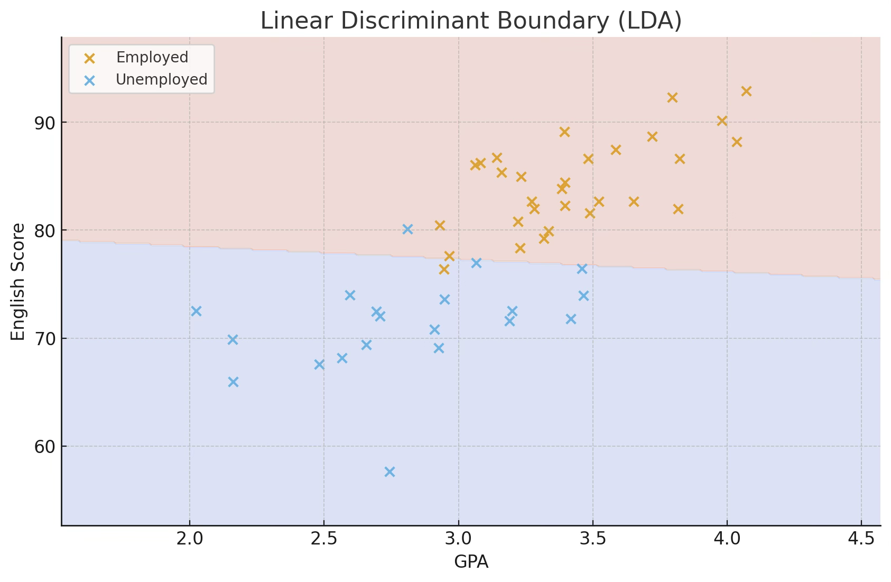
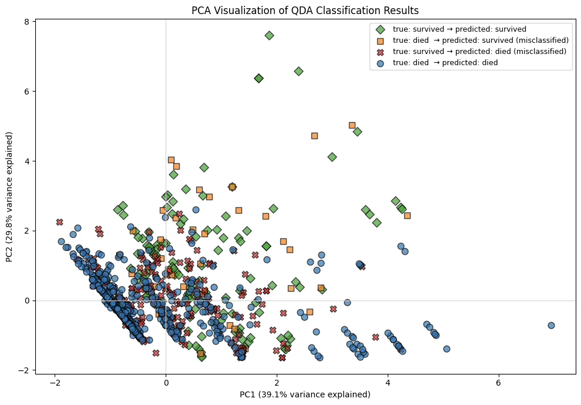
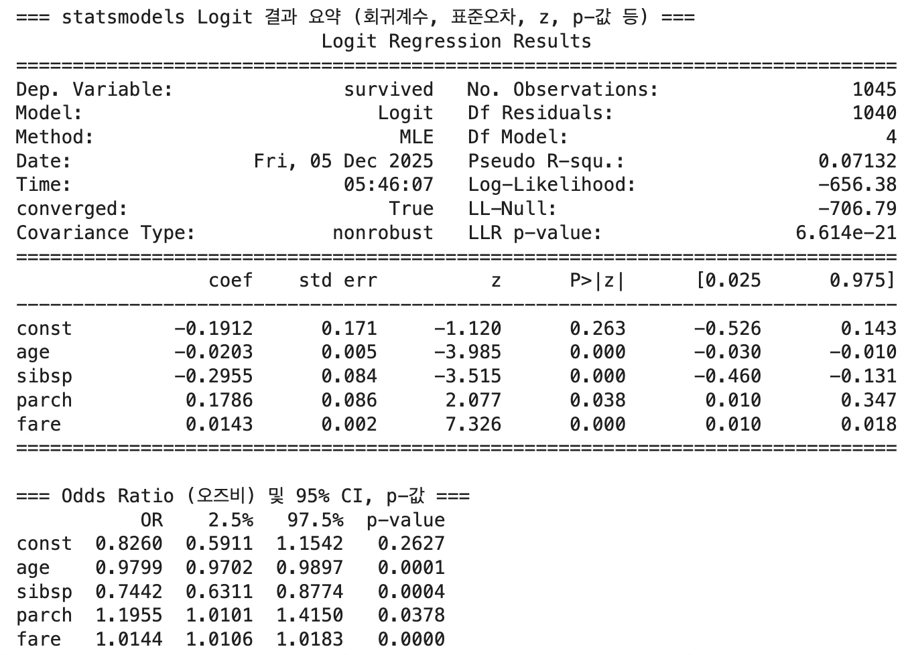
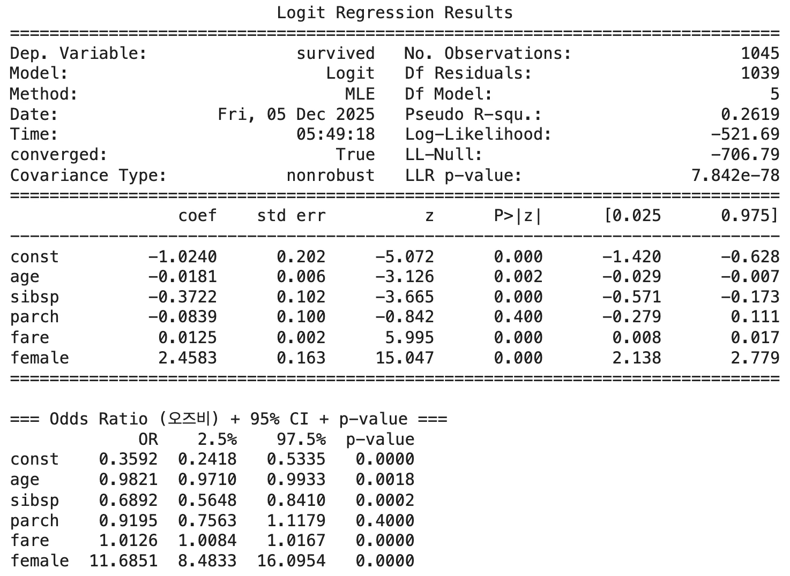

다변량분석 4.판별분석 (전통적방법)
Chapter 1. 판별분석 개요
1. 다변량 분석 비교
판별분석(Discriminant Analysis)은 군집분석(Clustering Analysis)과 함께 개체 유도 기법(Individual-directed Techniques) 에 속한다. 이들은 개체별로 측정된 여러 특성(변수) 값을 이용하여 개체 간의 유사성 또는 집단 소속을 판별하는 방법이다.
판별분석은 사전에 집단이 알려져 있는 경우, 각 집단의 특성을 반영하는 판별함수를 추정하여 새로운 개체가 어느 집단에 속하는지를 예측하는 분석 방법이다. 반면 군집분석은 집단의 구분이 알려져 있지 않은 상태에서 개체 간 유사성을 기준으로 자연스러운 집단(Cluster) 을 형성하는 탐색적 분석 방법이다.
이에 대응되는 또 다른 축의 분석 범주는 변수 유도 기법(Variable-directed Techniques) 이다. 이 기법은 \(p\)개의 원변수 간 상관관계(공분산 행렬 또는 상관계수 행렬)를 이용하여 변수 구조를 축약하거나 잠재 요인을 도출하는 방법이다. 변수 유도 기법에는 다음과 같은 두 가지 대표적 방법이 있다.
주성분분석(Principal Component Analysis, PCA)은 원변수들의 선형결합을 통해 새로운 주성분 변수를 도출하며, 전체 분산의 약 80% 이상을 설명하는 몇 개(보통 2~4개)의 주성분으로 차원을 축소한다.
요인분석(Factor Analysis)은 변수들 간의 상관구조를 분석하여 이들을 서로 상호배타적인 잠재 요인(Factor)으로 묶는 방법이다. 각 요인은 변수들 간의 공통된 변동(공통분산, Communality)을 설명한다.
2. 군집분석과 판별분석 차이
판별분석은 사전에 집단이 이미 정의되어 있을 때, 개체의 여러 특성값(변수)을 이용하여 집단 간 차이를 설명하고 새로운 개체가 어느 집단에 속할지를 예측하는 지도학습(supervised learning) 기법이다. 즉, 집단 정보가 주어진 상태에서 개체를 구분하는 판별함수를 추정하는 것이 목적이다.
반면 군집분석은 집단이 알려져 있지 않은 상태에서, 개체 간의 유사성(Similarity) 또는 거리(Distance) 를 기준으로 자연스럽게 형성되는 집단을 찾아내는 비지도학습(unsupervised learning) 기법이다. 즉, 집단 정보를 모르는 상태에서 개체들을 유사한 속성을 지닌 그룹으로 묶는 과정이다.
H대학교 비즈니스통계학과 졸업생을 대상으로, 취업 여부에 영향을 미칠 것으로 예상되는 다음 7개 변수를 측정했다고 하자. 평점 (학업성취도), 비만도 (= 키/몸무게: 외모척도), 영어 성적, 자격증 개수, 원서 지원 회수, 가족 총 연소득 (재정능력), 친구 수 (사교력)이다.
【판별분석】 졸업생 중 6개월 이내 취업한 졸업생 30명과 취업하지 못한 졸업생 20명을 무작위 추출하였다(취업률 60%). 이들의 7개 변수값을 이용하여 ’취업 여부(2집단)’를 구분하는 판별함수를 추정한다.
\(D = a + b_{1}X_{1} + b_{2}X_{2} + \cdots + b_{7}X_{7}\), 여기서 D의 값이 기준치보다 크면 ”취업 가능”, 작으면 ”미취업”으로 분류된다. 새로운 졸업예정자에게 7개 변수를 측정하면, 위의 판별식을 통해취업 가능성을 확률적으로 예측할 수 있다. → 즉, 판별분석은 집단 정보(취업 여부)가 사전에 주어진 상태에서 개체를 분류하는 모형이다.
【군분석】 이번에는 같은 학과 졸업예정자 전체를 대상으로 위의 7개 변수를 측정했다고 하자. 이때 취업 여부는 아직 알 수 없다. 따라서 각 학생 간의 유사성을 유클리드 거리로 계산한 뒤, 유사성이 높은 학생끼리 묶어 군집(Cluster) 을 형성한다.
군집분석의 핵심 단계는 개체 간 유사성 계산 → 유사성에 따라 집단을 형성하는 기준 설정 (계층적 또는 비계층적 방법) → 군집의 수 결정 → 각 군집의 해석 및 명명 순이다. 이렇게 형성된 군집은 예를 들어 다음과 같이 해석할 수 있다.
군집 1: 높은 평점과 영어성적, 자격증 보유 — “취업 유망형”
군집 2: 낮은 영어성적과 지원회수 — “취업 소극형”
군집 3: 높은 사교력과 재정능력 — “취업 네트워크형”
→ 즉, 군집분석은 집단 정보가 없는 상태에서 개체 간 유사성을 바탕으로 자연스러운 집단 구조를 탐색하는 방법이다.
| 구분 | 판별분석 | 군집분석 |
| 집단 정보 | 사전에 알려져 있음 (지도학습) | 알려져 있지 않음 (비지도학습) |
| 목적 | 집단을 구분하는 판별식 도출 | 개체 간 유사성에 따른 자연 집단 형성 |
| 주요 도구 | 판별함수, 판별점수 | 거리행렬, 유사도, 덴드로그램 |
| 적용 예 | 취업 여부 예측, 고객 이탈 예측 | 고객 세분화, 시장 세분화 |
| 분석 결과 | 예측 모델(선형·2차 판별식) | 군집의 수와 각 군집의 특성 |
| 대표 방법 | Fisher 선형판별분석, 로지스틱 판별 | K-평균, 계층적 군집(Hierarchical) |
판별분석은 자료 수집 단계에서 이미 그룹이 구분되어 있는 경우, 이들 집단을 가장 잘 구분하는 판별규칙을 도출하여, 새로운 개체가 어느 집단에 속할지를 예측하는 방법이다.

군집분석은 개체의 그룹 정보가 사전에 주어지지 않은 상태에서 출발한다. 즉, 처음에는 모든 개체가 구분 표시가 없이 동일한 상태이며, 분석을 통해 유사성이 가까운 개체들끼리 묶이면서 군집이 형성된다.

3. 판별규칙
판별규칙은 모집단에 속한 개체들을 가능한 한 정확하게 구분하기 위한 판별함수의 형태로 설정된다. 즉, 두 개 이상의 모집단이 있을 때, 각 모집단의 특성을 반영하는 변수들의 선형결합 또는 비선형결합을 통해 새로운 개체가 어느 모집단에 속하는지를 오분류 확률이 최소가 되도록 분류하는 규칙을 찾는 것이다.
아래 그림은 두 모집단 A와 B가 두 개의 판별변수 (y, z)로 표현된 예이다. 점선으로 표시된 직선은 두 집단을 구분하는 선형 판별규칙이다. 직선 판별선 아래쪽의 히스토그램은 각 집단의 판별점수 분포를 나타내며, 빗금친 부분이 오분류 확률을 의미한다.
(B 모집단의 왼쪽 빗금 부분): 실제로는 B집단에 속하지만, 판별규칙에 의해 A집단으로 잘못 분류된 비율.
(A 모집단의 오른쪽 빗금 부분): 실제로는 A집단에 속하지만, 판별규칙에 의해 B집단으로 잘못 분류된 비율.
이 두 오분류 확률의 합이 전체 분류 오류율이며, 판별규칙은 이 오류율을 최소화하도록 설정된다.

다음 그림은 두 가지 형태의 판별경계를 보여준다. 왼쪽은 직선 형태의 판별규칙, 오른쪽은 다항식 형태의 판별규칙이다. 산점도를 보면, 다항식 형태의 곡선 판별선이 두 집단을 더 잘 구분하여 오분류가 적어 보이지만, 실제 분석에서는 이차 함수 형태까지만 안정적으로 추정이 가능하다. 그 이상의 고차식 판별규칙은 과적합(overfitting) 문제가 발생하거나 모수 추정이 불안정해지는 경우가 많기 때문이다.
따라서 실제 분석에서는 단순히 시각적으로 구분이 잘 되는 곡선을 선택하기보다, 오분류율의 검정 결과와 예측 정확도를 함께 고려하여 최적의 판별규칙 형태(선형 또는 이차)를 선택한다.

4. 오분류 misclassification ratio
(1) confusion matrix 혼동행렬
마취과 의사가 마취 양을 결정할 때 (나이, 혈압, 맥박, 몸무게)가 영향을 준다고 하여 4개 변수로 마취안전여부를 판단하는 판별규칙을 만들었다고 하자.
양성 positive ={마취 안전한 하다고 판단}
음성 negative ={마취 불안전하다고 판단}
| 실제 / 예측 | 안전(Safe, positive) | 불안전(Unsafe, negative) |
| 안전(Safe) | True Positive (TP) – 실제로 안전하며, 안전하다고 정확히 분류 | False Negative (FN) – 실제로 안전하지만 불안전하다고 잘못 분류 |
| 불안전(Unsafe) | False Positive (FP) – 실제로 불안전하지만 안전하다고 잘못 분류 | True Negative (TN) – 실제로 불안전하며, 불안전하다고 정확히 분류 |
| 지표 | 수식 | 해석 |
| 정확도 (Accuracy) | \[\frac{TP + TN}{TP + TN + FP + FN}\] | 전체 중 정확히 분류된 비율 |
| 민감도 (Sensitivity, Recall) | \[\frac{TP}{TP + FN}\] | 실제 안전 환자 중 ’안전’으로 올바르게 판별한 비율 |
| 특이도 (Specificity) | \[\frac{TN}{TN + FP}\] | 실제 불안전 환자 중 ’불안전’으로 올바르게 판별한 비율 |
| 양성예측도 (Positive Predictive Value, PPV) | \[\frac{TP}{TP + FP}\] | 안전하다고 분류된 환자 중 실제로 안전한 비율 |
| 음성예측도 (Negative Predictive Value, NPV) | \[\frac{TN}{TN + FN}\] | 불안전하다고 분류된 환자 중 실제로 불안전한 비율 |
| 오분류율 (Error rate) | \[\frac{FP + FN}{TP + TN + FP + FN}\] | 잘못 분류된 비율 |
| F1 점수 (F1-score) | \[\frac{2TP}{2TP + FP + FN}\] | Precision과 Recall의 조화평균 — 불균형 데이터에서 유용 |
| AUC (Area Under ROC Curve) | – | 다양한 임계값에서 모델의 전반적 판별능력 |
| Balanced Accuracy | \[\frac{\text{Sensitivity} + \text{Specificity}}{2}\] | 불균형 클래스일 때 정확도 보정지표 |
(2) Reciever Operating Curve
아래 그림은 진단 모형의 성능을 평가하기 위해 x축을 (1 − 특이도), y축을 민감도로 하여 나타낸 이차원 곡선(ROC Curve) 이다. 이 그래프는 양성과 음성을 가장 정확하게 구분하기 위한 기준값(cut-off value) 을 결정하는 데 활용되며, 의학 및 생명과학 분야에서 진단검사의 정확도를 비교하는 표준적인 도구로 사용된다.

축의 의미
x축 (1 − Specificity) : 실제 음성 환자를 양성으로 잘못 분류할 확률(위양성율, False Positive Rate)
y축 (Sensitivity) : 실제 양성 환자를 양성으로 올바르게 분류할 확률(True Positive Rate)
원점 (0,0)은 민감도 0, 특이도 1, 즉 ”모두 음성으로 판단하는 완전한 보수적 진단”을 의미한다. 반대로 (1,0)은 민감도 1, 특이도 0으로, ”모두 양성으로 판단하는 진단”을 뜻한다. (1,1)은 민감도와 특이도 모두 1인 이상적인 완벽 진단을 의미한다.
AUC (Area Under the Curve)
ROC 곡선 아래의 면적을 AUC(Area Under the Curve) 라고 하며,
이 값은 진단 모형의 전반적인 구분 능력을 정량적으로 평가하는 지표이다.
AUC = 1.0 → 완벽한 판별 (perfect discrimination)
AUC = 0.5 → 무작위(random) 판별, 즉 45° 대각선 수준
AUC < 0.5 → 무작위보다 못한 진단
따라서, AUC는 0.5보다 커야 의미 있는 진단방법이며, AUC 값이 가장 큰 모형이 가장 적절한 진단방법으로 간주된다. 그림에서 곡선이 다른 곡선보다 AUC가 넓다면, 그 진단방법이 우수하다.
기준값(Cut-off value)의 결정
ROC 곡선에서 양성과 음성을 구분하는 기준값(c) 을 선택하는 가장 일반적인 방법은 Youden의 J 통계량(Youden’s Index) 을 활용하는 것이다.
\[J = \text{Sensitivity} + \text{Specificity} - 1\]
이 값이 가장 큰 지점이 곧 최적 기준값(c*) 에 해당하며, 그 지점이 바로 그림 속 원으로 표시된 c이다. 즉, Youden J가 최대가 되는 점에서 민감도와 특이도의 균형이 가장 잘 맞아 양성과 음성을 가장 효율적으로 구분할 수 있다.
요약하면, ROC 곡선은 진단검사의 판별력을 시각적으로 표현한 그래프이며, AUC는 진단력의 크기를, Youden J는 최적 기준값을 결정하기 위한 통계량으로 사용된다.
5. 오분류 추정방법
Re-substitution 규칙
수집된 데이터로부터 얻은 판별식을 원 데이터에 적용하여 개체를 분류하여 오분류 비율을 구하는 것으로 정분류 비율이 높게 추정될(overestimate) 가능성이 있어 거의 사용하지 않는다. 그러나 대부분의 소프트웨어는 이를 사용한다. 빅데이터에서는 train(학습), test(감증) 데이터로 나누어 판별규칙 검증한다.
테스트 데이터 이용
데이터를 양분하여 한 개체 그룹으로부터 판별식을 유도하고, 이 판별식을 사용하여 다른 그룹의 개체를 분류하여 오분류 비율을 추정한다. 표본 자료의 1/2만 사용하여 판별식을 구하므로 모집단 분류에 적합한 판별식을 얻을 가능성이 낮고 데이터를 많이 수집해야 한다는 단점으로 인하여 이 방법 역시 사용 빈도가 낮았지만 빅데이터에서는 가능하다. 가장 많이 사용.
Cross-validation 추정법
Lachenbrush(1968)가 제안한 방법으로 가장 널리 사용된다. 첫 번째 개체 하나를 제외하고 판별식을 구하여 그 개체를 분류하고, 첫 번째 개체를 다시 넣고 두 번째 개체를 제외하고 판별식을 구한 후 두 번째 개체를 분류하고…… 이렇게 하여 오분류 비율을 추정한다. 이 방법을 Jackknife 방법이라고도 한다.
6. 분석 사례 데이터
모집단 그룹 2개: titanic 데이터
타이타닉호(Titanic) 는 1912년 4월 10일 영국 사우샘프턴(Southampton)을 출발해 뉴욕으로 향하던 초호화 여객선이었습니다.
1912년 4월 15일 새벽, 북대서양에서 빙산과 충돌해 침몰하면서 약 2,224명 중 1,500명 이상이 사망한 비극적인 사고로 기록되었다.
당시 타이타닉은 ”절대 침몰하지 않는 배(The unsinkable ship)” 로 알려졌지만, 부족한 구명보트, 계급(객실등급)에 따른 대피 우선순위, 성별·연령에 따른 생존 차이 등 사회적 요인이 생존율에 크게 작용하였다. 이 사건은 단순한 해상 사고를 넘어, 사회 계층, 성별, 나이, 경제력이 생존 확률에 어떤 영향을 주었는지를 보여주는 대표적 사회통계 데이터로 평가되고 있다.
| 변수명 | 설명 | 변수 유형 |
| survived | 생존 여부 (0 = 사망, 1 = 생존) | 종속변수(Binary) |
| pclass | 객실 등급 (1 = 1등급, 2 = 2등급, 3 = 3등급) | 범주형(서열형) |
| sex | 성별 (male, female) | 범주형(명목형) |
| age | 나이 | 연속형 |
| sibsp | 함께 탄 형제/배우자 (siblings/spouses aboard) | 이산형 |
| parch | 함께 탄 부모/자녀 수 (parents/children aboard) | 이산형 |
| fare | 운임 요금 (단위: 파운드) | 연속형 |
| embarked | 승선항 (C=쉐르부르, Q=퀸즈타운, S=사우샘프턴) | 범주형 |
| name | 승객 이름 (칭호 포함) | 문자형 |
| ticket | 승선권 번호 | 문자형 |
| cabin | 객실 번호 | 문자형 |
| boat | 구명보트 번호 | 문자형 |
| body | 시신 인식번호 | 연속형 |
| home.dest | 거주지(목적지) | 문자형 |
모집단 그룹 3개: Penguins 데이터
Palmer Penguins 데이터는 Kristen M. Gorman 연구팀이 2007–2009년 사이 남극 Palmer Station 주변 세 섬(Biscoe, Dream, Torgersen)에서 수행한 장기 생태 모니터링 프로그램의 실측 자료를 기반으로 한다. 본 자료는 이후 교육과 연구 활용을 위해 palmerpenguins 패키지 형태로 정리·공개되었다.
개체의 형태적 특징을 나타내는 대표적 변수들은 bill_length_mm(부리 길이), bill_depth_mm(부리 깊이), flipper_length_mm(지느러미 길이), body_mass_g(몸무게) 등이 있다. 부리 길이와 깊이는 먹이 습성과 종별 형태적 차이를 반영하며, 지느러미 길이와 몸무게는 개체의 크기나 생태적 적응성을 파악하는 데 유용하다. 또한 sex 변수는 개체의 성별을 나타내며, male 또는 female로 기록된다. 일부 종에서는 암수 간 신체 치수가 일정 부분 차이를 보이므로, 성별은 형태 분석이나 생존 전략 연구에서 중요한 보조 변수 역할을 한다.
| 변수명 | 유형 | 단위 | 설명 |
| species | 범주형 | – | 펭귄의 종(Adélie, Chinstrap, Gentoo) |
| island | 범주형 | – | 개체가 관찰된 섬(Biscoe, Dream, Torgersen) |
| bill_length_mm | 연속형 | mm | 부리의 길이. 종 간 형태적 차이 분석에 활용됨 |
| bill_depth_mm | 연속형 | mm | 부리의 깊이. 먹이 습성 및 종 분류에 영향 |
| flipper_length_mm | 연속형 | mm | 지느러미 길이. 종별 크기 및 생태적 차이를 반영 |
| body_mass_g | 연속형 | g | 몸무게. 생리적 상태 및 종 차이를 파악하는 데 사용 |
| sex | 범주형 | – | 펭귄의 성별(male / female) |
| year | 정수형 | 년도 | 개체가 측정된 연도(2007, 2008, 2009) |
Chapter 2. 모집단이 2개 집단인 경우 판별분석
1. 정의
데이터 벡터, 모집단 분포
판별 측정변수 벡터 : \(\mathbf{x} = \left( \begin{array}{r} x_{1} \\ x_{2} \\ \vdots \\ x_{p} \end{array} \right) \sim N_{p}(\mathbf{\mu},\mathbf{\Sigma})\)
모집단 1: \(\pi_{1} \sim f_{1}(\mathbf{x}) \sim MN(\mathbf{\mu}_{1},\mathbf{\Sigma}_{1})\),
모집단 2: \(\pi_{2} \sim f_{2}(\mathbf{x}) \sim MN(\mathbf{\mu}_{2},\mathbf{\Sigma}_{2})\)
각 모집단으로부터 \((n_{1},n_{2})\) 크기의 표본 개체를 추출하여 판별 측정변수의 관측값을 조사했다고 하자. 각 표본의 평균벡터를 \(\overline{\mathbf{x}} = ({\overline{x}}_{1},{\overline{x}}_{2})\), 공분산행렬을 \((S_{1}^{2},S_{2}^{2})\)이라 하자.
기호 notation
사전확률 Prior Probability: \(P(\pi_{i}) = \pi_{i},\pi_{1} + \pi_{2} = 1\), 여기서 \(\pi_{i}\)는 모집단 i에 속할 확률 (사전정보)
조건부 분류확률 Conditional Probability of Classification: \(P(X \in R_{i} \mid \pi_{j})\), 모집단 j에 속한 개체가 판별식에 의해 모집단 i로 분류될 확률, \(i = j\) → 정분류이고 \(i \neq j\) → 오분류이다.
분류비용 ost of Misclassification: \(c(j \mid i)\), 모집단 i에 속한 개체를 모집단 j 로 판별했을 때 발생하는 비용으로 \(i = j\)이면 \(c(j \mid i) = 0\) 정분류 → 비용 없음이고, \(i \neq j\) 이면 \(c(j \mid i) > 0\) 오분류 비용이 존재한다.
전체 오분류확률 Total Probability of Misclassification: \(P(\text{error}) = P(\pi_{1})P(X \in R_{2} \mid \pi_{1}) + P(\pi_{2})P(X \in R_{1} \mid \pi_{2})\)

| 기호 | 의미 | 비고 |
| \[\pi_{i}\] | 모집단 i의 사전확률 | \[\pi_{1} + \pi_{2} = 1\] |
| \[R_{i}\] | 모집단 i로 분류되는 영역 | 판별경계에 의해 결정 |
| \[P(X \in R_{i} \mid \pi_{j})\] | 실제 j집단이 i로 분류될 확률 | 정분류/오분류 확률 |
| \[c(j \mid i)\] | i를 j로 분류할 때의 비용 | i=j이면 0 |
| \[P(\text{error})\] | 전체 오분류 확률 | 두 오분류항의 합 |
2. 판별규칙
오분류 기대비용 ECM 최소화
분류 기대비용 최소화는 베이즈 접근의 핵심 개념으로, 오분류 확률뿐 아니라 오분류로 인한 손실까지 고려한 ”경제적 판별기준”을 제공한다.
이로부터 우도비 검정 형태의 판별식이 유도되며, Fisher의 선형판별식은 그 특수한 형태(등비용·등분산의 경우)에 해당한다.
두 모집단을 각각 \(\pi_{1},\pi_{2}\)라 하고, 사전확률을 \(p_{1} = P(\pi_{1}),p_{2} = P(\pi_{2})\)라 하자. 또한, 모집단 1의 개체를 잘못 2로 분류할 때의 비용을 \(c(2|1)\), 모집단 2의 개체를 잘못 1로 분류할 때의 비용을 \(c(1|2)\) 라고 하자. 이때 전체 기대비용은 다음과 같이 표현된다.
\(ECM = c(2|1)P(2|1)p_{1} + c(1|2)P(1|2)p_{2}\), 여기서
\(P(2|1)\)은 실제 모집단 1에 속한 개체를 2로 잘못 분류할 확률, \(P(1|2)\)은 실제 모집단 2에 속한 개체를 1로 잘못 분류할 확률을 의미한다.
이 기대비용을 최소화하기 위한 최적의 판별규칙은 다음의 베이즈 의사결정 규칙에 의해 결정된다.
\(R_{1}:\frac{f_{1}(x)}{f_{2}(x)} \geq \frac{p_{2}}{p_{1}} \cdot \frac{c(1|2)}{c(2|1)}\), \(R_{2}:\frac{f_{2}(x)}{f_{1}(x)} \geq \frac{p_{1}}{p_{2}} \cdot \frac{c(2|1)}{c(1|2)}\), 여기서 \(f_{i}(x)\)은 모집단 i의 확률밀도함수, \(\frac{f_{1}(x)}{f_{2}(x)}\)은 우도비, \(\frac{p_{2}}{p_{1}}\)은 사전확률비, 그리고 \(\frac{c(1|2)}{c(2|1)}\)은 비용비를 의미한다. 따라서,
새로운 관측치 x에 대하여 \(\frac{f_{1}(x)}{f_{2}(x)}\)가 오른쪽 항보다 크면 모집단 1로,
작으면 모집단 2로 분류한다.
우도함수 likelihood ratio (다변량 정규분포)
모집단이 다변량정규분포(\(\mathbf{x} \mid \pi_{i} \sim N_{p}(\mathbf{\mu}_{i},\mathbf{\Sigma}_{i}),i = 1,2\))를 따른다면, 새로운 개체 \(\mathbf{x}_{0}\)에 대하여 \(L(\mathbf{x}_{0};\mathbf{\mu}_{1},\mathbf{\Sigma}_{1}) \geq L(\mathbf{x}_{0};\mathbf{\mu}_{2},\mathbf{\Sigma}_{2})\)이 성립하면 모집단 1로 그렇지 않으면 모집단 2로 판별한다.
즉, 우도비 판별은 베이즈 의사결정이론의 핵심 원리로, 두 모집단의 확률밀도함수를 비교하여 가장 ”가능성이 높은” 모집단으로 새로운 개체를 분류하는 방법이다.
Fisher 선형 linear 판별
다변량 정규분포의 두 모집단이 동일한 공분산(\(\mathbf{\Sigma}_{1} = \mathbf{\Sigma}_{2} = \mathbf{\Sigma}\))을 갖는다면 다음과 같이 통합분산에 의해 추정된다.
통합 공분산 : \(\widehat{\mathbf{\Sigma}} = \frac{(n_{1} - 1)\mathbf{S}_{1} + (n_{2} - 1)\mathbf{S}_{2}}{n_{1} + n_{2} - 2}\)
그리고 우도함수식은 다음의 판별규칙으로 간편화 된다.
\((\mathbf{\mu}_{1} - \mathbf{\mu}_{2})'{\widehat{\mathbf{\Sigma}}}^{- 1}\mathbf{x}_{0}\frac{1}{2}(\mathbf{\mu}_{1} - \mathbf{\mu}_{2})'{\widehat{\mathbf{\Sigma}}}^{- 1}(\mathbf{\mu}_{1} + \mathbf{\mu}_{2}) \geq c\), 여기서 \(c = \ln\left\lbrack \frac{c(1|2)p_{2}}{c(2|1)p_{1}} \right\rbrack\)는 사전확률(\(p_{1},p_{2}\))과 오분류비용(\(c(1|2),c(2|1)\))을 반영한 판별경계이다.
만약 두 모집단의 사전확률이 동일하고 오분류 비용도 동일하다면 \(p_{1} = p_{2},c(1|2) = c(2|1)\) 이므로 \(c = 0\)이 된다.
따라서 판별규칙은 다음과 같이 단순화된다.
\[(\mathbf{\mu}_{1} - \mathbf{\mu}_{2})'{\widehat{\mathbf{\Sigma}}}^{- 1}\left( \mathbf{x}_{0} - \frac{1}{2}(\mathbf{\mu}_{1} + \mathbf{\mu}_{2}) \right) \geq 0\]
요약하자면 Fisher의 선형판별함수는 두 집단 간 평균의 차이를 공분산행렬로 표준화하여 개체의 위치를 선형결합 형태로 비교하는 판별식이다. 동일 공분산 가정 하에서 판별경계는 선형이 되며, 이는 오분류율을 최소화하는 베이즈 판별규칙의 특수한 경우로 해석된다.

두 모집단의 이분산 경우 Fisher는 Quadratic 판별규칙
앞에서 다룬 Fisher의 선형판별식은 두 모집단의 공분산행렬이 동일하다는 가정하에서만 유효하였다. 그러나 실제 데이터에서는 모집단별로 변동성이 서로 다른 경우가 많으며, 이때는 공분산이 서로 다름을 인정하고 다음과 같이 일반화한다.
\(\mathbf{x} \mid \pi_{i} \sim N_{p}(\mathbf{\mu}_{i},\mathbf{\Sigma}_{i}),i = 1,2\). 즉, 각 모집단은 서로 다른 평균벡터와 공분산행렬을 갖는 다변량 정규분포를 따른다고 가정한다.
각 모집단의 확률밀도함수는 다음과 같다.
\[f_{i}(\mathbf{x}) = \frac{1}{(2\pi)^{\frac{p}{2}}|\mathbf{\Sigma}_{i}|^{\frac{1}{2}}}\exp\left\{ - \frac{1}{2}(\mathbf{x} - \mathbf{\mu}_{i})'\mathbf{\Sigma}_{i}^{- 1}(\mathbf{x} - \mathbf{\mu}_{i}) \right\},i = 1,2\]
베이즈 의사결정 규칙에 따라 \(\pi_{i}f_{i}(\mathbf{x}_{0})\)중 더 큰 값을 갖는 집단으로 분류한다. 즉, \(\text{모집단 1로 분류:}\pi_{1}f_{1}(\mathbf{x}_{0}) \geq \pi_{2}f_{2}(\mathbf{x}_{0})\)
우도함수를 로그변환하여 정리하면, 판별함수는 다음과 같이 이차(quadratic) 형태로 표현된다.
\[g_{i}(\mathbf{x}) = - \frac{1}{2}\ln|\mathbf{\Sigma}_{i}| - \frac{1}{2}(\mathbf{x} - \mathbf{\mu}_{i})'\mathbf{\Sigma}_{i}^{- 1}(\mathbf{x} - \mathbf{\mu}_{i}) + \ln p_{i}\]
\[\text{집단 1로 분류:}g_{1}(\mathbf{x}_{0}) > g_{2}(\mathbf{x}_{0}),\text{집단 2로 분류:}g_{2}(\mathbf{x}_{0}) > g_{1}(\mathbf{x}_{0})\]
이때 두 함수 \(g_{i}(\mathbf{x})\)는 \(\mathbf{x}\)의 제곱항을 포함하므로 결정경계는 이차곡면이 된다.
DA는 LDA를 일반화한 형태로, 집단 간 공분산이 서로 다를 때 적용하는 판별기법이다. LDA의 선형경계가 하나의 평면이라면, QDA는 공분산 차이에 따라 곡면 형태의 결정경계를 형성한다. 표본수가 충분히 많고 각 집단의 분산 구조가 뚜렷이 다를 때 QDA는 LDA보다 더 정교한 분류 성능을 보인다.

3. Fisher 판별분석
Fisher의 선형판별모형은 각 판별변수가 다변량 정규분포를 따른다는 전제하에 평균과 공분산 구조를 이용하여 판별축을 구하므로, 범주형 변수(예: 성별, 직업, 지역 등)를 직접 포함하는 것은 여러 통계적 한계를 가진다. 범주형 변수는 본질적으로 이산(discrete) 자료이기 때문에 평균과 분산의 개념이 연속형 변수와 다르며, 예를 들어 성별 변수(Sex = {0, 1})처럼 두 값만 존재하는 자료를 정규분포로 근사하는 것은 분포적 가정을 위배한다.
또한 이러한 0/1 변수는 다른 연속형 변수와의 공분산이 매우 작거나 특정 집단에서 분산이 0이 되어 공분산행렬이 비가역(singular) 형태로 나타나며, 이는 \(\mathbf{\Sigma}^{- 1}\)계산 단계에서 수치적 불안정성을 초래한다. 더 나아가 LDA는 평균 간 거리와 군집 내 분산의 비율을 통해 최적의 판별축을 찾는 기법인데, 범주형 변수의 경우 ’거리’ 개념이 정의되지 않기 때문에 남성(0)과 여성(1)의 차이를 단순히 1이라는 수치로 간주하면 실제 의미 없는 기호적 차이를 동일한 수량적 거리로 취급하는 왜곡이 발생한다.
사례 데이터 불러오기
| 변수명 | 설명 | 변수유형 | 활용 형태 |
| Survived | 성별 (male/female) | 범주형 | 모집단 그룹 |
| Age | 나이 | 연속형 | 판별변수 |
| Fare | 운임 요금 | 연속형 | 판별변수 |
| SibSp | 함께 탑승한 형제/배우자 수 | 연속형(이산형) | 판별변수 |
| Parch | 함께 탑승한 부모/자녀 수 | 연속형(이산형) | 판별변수 |
# tatanic data
import pandas as pd
url = "https://by-sekwon.github.io/api/titanic.xlsx"
df = pd.read_excel(url)
# 결측치 제거
df[['age','survived','fare']].dropna(inplace=True)
df.info()Data columns (total 14 columns):
0 survived 1309 non-null int64
1 name 1309 non-null object
2 sex 1309 non-null object
3 age 1046 non-null float64
4 sibsp 1309 non-null int64
5 parch 1309 non-null int64
6 pclass 1309 non-null int64
7 ticket 1309 non-null object
8 fare 1308 non-null float64
9 cabin 295 non-null object
10 embarked 1307 non-null object
11 boat 486 non-null object
12 body 121 non-null float64
13 home.dest 745 non-null object
(1) 사전분석
모집단 그룹별 판별변수 분포
import seaborn as sns
import matplotlib.pyplot as plt
# 변수 선택
cols = ['age', 'sibsp', 'parch', 'fare', 'survived']
df_plot = df[cols].dropna()
# 산점도 행렬 (집단별 색상)
sns.pairplot(
data=df_plot,
vars=['age', 'sibsp', 'parch', 'fare'],
hue='survived',
diag_kind='kde',
palette='Set1',
plot_kws={'alpha': 0.7, 's': 40, 'edgecolor': 'k'}
)
plt.suptitle("Scatter Matrix by Survival", y=1.02, fontsize=13)
plt.show()사망자(0) 집단의 평균 나이는 약 30.5세, 생존자(1) 집단의 평균 나이는 약 28.9세로, 생존자의 연령이 약간 더 낮게 나타났다. 표준편차는 두 집단 모두 약 14~15로 비슷하여, 연령 분포의 폭에는 큰 차이가 없다. 이는 전반적으로 어린 승객이 생존할 가능성이 약간 높았음을 시사한다.
fare(운임)는 두 집단 간의 차이가 뚜렷합니다. 사망자의 평균 운임은 약 23.4, 생존자의 평균 운임은 약 49.4로, 생존자의 운임이 두 배 이상 높게 나타났다. 표준편차 또한 생존자 집단에서 훨씬 크기 때문에(68.6 vs 34.1), 생존자 중에는 고운임 승객이 많았고 분산도 컸음을 알 수 있다. 이는 상위 선실을 이용한 승객일수록 생존 가능성이 높았다는 잘 알려진 Titanic의 구조 상황과 일치한다.
parch(부모·자녀 수)와 sibsp(형제자매·배우자 수)는 두 집단에서 모두 평균이 0.3~0.5 수준으로 비슷하다. 다만, 생존자의 평균이 약간 더 높게 나타나 가족 동반 승객의 생존 확률이 다소 높았을 가능성을 보여준다. 그러나 표준편차가 작고 분포가 편중되어 있어, 이 두 변수의 판별력은 fare나 age에 비해 상대적으로 약할 것으로 예상된다.
전체적으로 보면, 생존자와 사망자 간에 가장 큰 차이를 보이는 변수는 fare, 다음은 age, 그리고 sibsp와 parch는 차이가 미미하다. 따라서 피셔의 판별분석에서 fare가 판별함수의 주된 기여변수로 작용할 가능성이 높다.

모집단 그룹별 판별변수 평균, 표준편차
# survived별 평균, 표준편차 계산
df.pivot_table(
index='survived',
values=['age', 'sibsp', 'parch', 'fare'],
aggfunc=['mean', 'std'],
margins=True)사망자 집단의 평균 나이는 30.5세로, 생존자 집단의 평균 나이 28.9세보다 약간 높다. 표준편차는 각각 13.9와 15.1로 비슷한 수준이다. 이는 두 집단 간의 연령 분포가 거의 겹치지만, 상대적으로 젊은 승객의 생존 비율이 다소 높았음을 의미한다.
운임(fare)의 차이는 훨씬 뚜렷하다. 사망자 집단의 평균 운임은 23.4, 생존자 집단은 49.4로 약 두 배 이상 차이가 난다. 표준편차 또한 생존자 집단이 훨씬 크다(68.6 > 34.1). 이는 운임이 높을수록, 즉 상위 객실 승객일수록 생존 가능성이 높았음을 보여준다. Titanic 사고의 사회계층적 구조가 통계적으로 확인되는 대목이다.
부모·자녀 수(parch)의 평균은 사망자 0.33, 생존자 0.48로 소폭의 차이를 보인다. 가족을 동반한 승객이 다소 높은 생존 확률을 가졌던 것으로 해석되지만, 표준편차가 작고 대부분의 값이 0에 몰려 있어 판별력은 크지 않다. 형제·배우자 수(sibsp) 역시 두 집단 간 차이가 거의 없으며(0.52 vs 0.46), 변수의 변동성 또한 크지 않다.
요약하면, 네 변수 가운데 생존 여부를 가장 강하게 구분하는 변수는 fare(운임) 이다. age는 약한 수준의 보조 변수로 작용하며, parch와 sibsp는 판별 기여도가 거의 없는 변수로 보인다. 결국 Titanic의 생존 확률은 나이보다는 사회적 지위(운임 수준) 에 따라 뚜렷한 차이를 보였다고 해석된다.
| survived | mean | std | ||||||
| age | fare | parch | sibsp | age | fare | parch | sibsp | |
| 0 | 30.55 | 23.35 | 0.33 | 0.52 | 13.92 | 34.15 | 0.91 | 1.21 |
| 1 | 28.92 | 49.36 | 0.48 | 0.46 | 15.06 | 68.65 | 0.78 | 0.69 |
| All | 29.85 | 36.69 | 0.42 | 0.50 | 14.39 | 55.73 | 0.84 | 0.91 |
(2) 등분산 검정
귀무가설: 각 집단의 공분산행렬이 동일하다 (등분산)
대립가설: 적어도 하나의 집단은 공분산행렬이 다르다
import numpy as np
import pandas as pd
from scipy.stats import chi2
# 분석 변수 선택
X = df[['age', 'sibsp', 'parch', 'fare']].dropna()
y = df.loc[X.index, 'survived']
# 각 집단별 데이터 분리
groups = [X[y == g] for g in np.unique(y)]
# 표본 수, 변수 수
n_groups = len(groups)
n_vars = X.shape[1]
# 각 그룹의 공분산행렬
cov_mats = [np.cov(g, rowvar=False) for g in groups]
# 전체 풀드(결합) 공분산행렬
N = [len(g) for g in groups]
pooled_cov = sum([(n - 1) * S for n, S in zip(N, cov_mats)]) / (sum(N) - n_groups)
# Box's M 통계량 계산 함수
def box_m_test(cov_mats, N):
g = len(cov_mats)
p = cov_mats[0].shape[0]
pooled = sum([(n - 1) * S for n, S in zip(N, cov_mats)]) / (sum(N) - g)
logdet_pooled = np.log(np.linalg.det(pooled))
logdet_groups = sum([(n - 1) * np.log(np.linalg.det(S)) for n, S in zip(N, cov_mats)])
M = (sum(N) - g) * logdet_pooled - logdet_groups
# Correction factor (approximation)
C = ((2*p**2 + 3*p - 1) / (6*(p + 1)*(g - 1))) * (sum([1/(n - 1) for n in N]) - 1/(sum(N) - g))
M_corrected = (1 - C) * M
df = (g - 1) * p * (p + 1) / 2
p_value = 1 - chi2.cdf(M_corrected, df)
return M_corrected, df, p_value
# 실행
M, df_bm, pval = box_m_test(cov_mats, N)
print(f"Box’s M = {M:.3f}, df = {df_bm:.1f}, p-value = {pval:.4f}")Box’s M = 389.687, df = 10.0, p-value = 0.0000
즉, 유의확률이 <0.001이므로 공분산 행렬의 등분산 가정이 성립하지 않으며 QDA가 적합하다.
(3) 판별모형 도출 및 혼동행렬 산정
피셔 LDA
from sklearn.discriminant_analysis import LinearDiscriminantAnalysis as LDA
import pandas as pd
# 분석 데이터
X = df[['age', 'sibsp', 'parch', 'fare']].dropna()
y = df.loc[X.index, 'survived']
# LDA 모델 적합
lda = LDA()
lda_fit = lda.fit(X, y)
# 예측 및 판별점수
y_pred = lda.predict(X)
lda_scores = lda.decision_function(X)
# 판별계수(선형식의 가중치)
coef = pd.Series(lda.coef_[0], index=X.columns)
intercept = lda.intercept_[0]
print("=== LDA 선형판별식 ===")
print(f"D = {intercept:.4f} + " + " + ".join([f"{c:.4f}*{v}" for v, c in coef.items()]))
print("\n=== 변수별 판별계수 ===")
print(coef)
print("\n절편:", intercept)
print("\n훈련집합 정확도:", lda.score(X, y))=== LDA 선형판별식 ===
D = -0.2155 + -0.0179*age + -0.2633*sibsp + 0.2086*parch + 0.0107*fare
=== 변수별 판별계수 ===
age -0.017923
sibsp -0.263302
parch 0.208623
fare 0.010663
절편: -0.21554471170015432
훈련집합 정확도: 0.6555023923444976
from sklearn.metrics import confusion_matrix, classification_report
# 혼동행렬 계산
cm = confusion_matrix(y, y_pred)
print("=== Confusion Matrix ===")
print(cm)
# 상세 분류 지표
print("\n=== Classification Report ===")
print(classification_report(y, y_pred, target_names=["Dead (0)", "Survived (1)"]))=== Confusion Matrix ===
[[576 42]
[318 109]]
=== Classification Report ===
precision recall f1-score support
Dead (0) 0.64 0.93 0.76 618
Survived (1) 0.72 0.26 0.38 427
accuracy 0.66 1045
macro avg 0.68 0.59 0.57 1045
weighted avg 0.68 0.66 0.60 1045
피셔 QDA
from sklearn.discriminant_analysis import QuadraticDiscriminantAnalysis as QDA
from sklearn.metrics import confusion_matrix, classification_report
# 분석 데이터
X = df[['age', 'sibsp', 'parch', 'fare']].dropna()
y = df.loc[X.index, 'survived']
# QDA 모델 적합
qda = QDA()
qda_fit = qda.fit(X, y)
# 예측
y_pred_qda = qda.predict(X)
# 혼동행렬
cm_qda = confusion_matrix(y, y_pred_qda)
print("=== QDA Confusion Matrix ===")
print(cm_qda)
# 분류 정확도 및 지표
print("\n=== QDA Classification Report ===")
print(classification_report(y, y_pred_qda, target_names=["Dead (0)", "Survived (1)"]))
# 정확도
print("훈련집합 정확도:", qda.score(X, y))=== QDA Confusion Matrix ===
[[576 42]
[303 124]]
=== QDA Classification Report ===
precision recall f1-score support
Dead (0) 0.66 0.93 0.77 618
Survived (1) 0.75 0.29 0.42 427
accuracy 0.67 1045
macro avg 0.70 0.61 0.59 1045
weighted avg 0.69 0.67 0.63 1045
훈련집합 정확도: 0.6698564593301436
최종 판별모형 선택
| 구분 | LDA | QDA |
| 공분산 가정 | 동일(Σ₁=Σ₂) | 서로 다름(Σ₁≠Σ₂) |
| Box’s M p-value | 등분산 가정 위배) | 적용 가능 |
| 전체 정확도 | 65.60% | 67.00% |
| 생존자 재현율 | 26% | 29% |
| 경계 형태 | 선형 | 이차(비선형) |
Titanic 데이터에서 집단 간 공분산이 다르며, QDA가 LDA보다 약간 더 높은 정확도(0.67 vs 0.66)와 생존자 예측력을 보였다. 따라서 최종 판별모형은 QDA로 선정하는 것이 타당하다.
(4) 판별결과 활용(1) 새로운 개체 판별
age 30세, 동반 배우자 형제 수 1명, 부모 자식 동반자 수 2명, 요금 100$인 승객의 생존율? LDA 방법 61.5%, QDA 방법 68.5%로 생존한다고 판단할 수 있다.
import pandas as pd
#새로운 개체 정의
new_passenger = pd.DataFrame({
"age": [30],
"sibsp": [1],
"parch": [2],
"fare": [100]})
# 1) LDA로 판별
lda_class = lda.predict(new_passenger)
lda_prob = lda.predict_proba(new_passenger)
print("LDA 예측 클래스:", lda_class[0]) # 0 또는 1
print("LDA posterior 확률:", lda_prob) # 각 집단에 속할 사후확률
# 2) QDA로 판별
qda_class = qda.predict(new_passenger)
qda_prob = qda.predict_proba(new_passenger)
print("QDA 예측 클래스:", qda_class[0])
print("QDA posterior 확률:", qda_prob)LDA 예측 클래스: 1
LDA posterior 확률: [[0.38532454 0.61467546]]
QDA 예측 클래스: 1
QDA posterior 확률: [[0.31523609 0.68476391]]
(5) 판별결과 활용(2) 주성분 분삭 활용 판별 시각화
import numpy as np
import pandas as pd
import matplotlib.pyplot as plt
from sklearn.preprocessing import StandardScaler
from sklearn.decomposition import PCA
# 1. PCA 준비
scaler = StandardScaler()
X_scaled = scaler.fit_transform(X)
pca = PCA(n_components=2)
X_pca = pca.fit_transform(X_scaled)
# 2. 시각화용 데이터프레임
df_vis = pd.DataFrame({
"PC1": X_pca[:, 0],
"PC2": X_pca[:, 1],
"true": y.values,
"pred": y_pred_qda
}, index=X.index)
# 3. 영어 버전 그룹 레이블
def make_group_label(row):
if row["true"] == 0 and row["pred"] == 0:
return "true: died → predicted: died"
elif row["true"] == 0 and row["pred"] == 1:
return "true: died → predicted: survived (misclassified)"
elif row["true"] == 1 and row["pred"] == 0:
return "true: survived → predicted: died (misclassified)"
else:
return "true: survived → predicted: survived"
df_vis["group"] = df_vis.apply(make_group_label, axis=1)
# 4. 색 / 마커 설정
color_map = {
"true: died → predicted: died": "tab:blue",
"true: died → predicted: survived (misclassified)": "tab:orange",
"true: survived → predicted: died (misclassified)": "tab:red",
"true: survived → predicted: survived": "tab:green"
}
marker_map = {
"true: died → predicted: died": "o",
"true: died → predicted: survived (misclassified)": "s",
"true: survived → predicted: died (misclassified)": "X",
"true: survived → predicted: survived": "D"
}
# 5. 시각화
plt.figure(figsize=(10, 7))
for g in df_vis["group"].unique():
sub = df_vis[df_vis["group"] == g]
plt.scatter(
sub["PC1"], sub["PC2"],
label=g,
c=color_map[g],
marker=marker_map[g],
alpha=0.7,
edgecolor="k",
s=60
)
# 6. 축 설명력 표시
pc1_var = pca.explained_variance_ratio_[0] * 100
pc2_var = pca.explained_variance_ratio_[1] * 100
plt.xlabel(f"PC1 ({pc1_var:.1f}% variance explained)")
plt.ylabel(f"PC2 ({pc2_var:.1f}% variance explained)")
plt.title("PCA Visualization of QDA Classification Results")
plt.legend(loc="best", fontsize=9)
plt.axhline(0, color="lightgray", linewidth=0.8)
plt.axvline(0, color="lightgray", linewidth=0.8)
plt.tight_layout()
plt.show()
주성분 이름 부여
# PCA loadings (주성분 부하)
loadings = pd.DataFrame(
pca.components_.T, # (변수 × PC)
index=X.columns, # ['age','sibsp','parch','fare']
columns=['PC1', 'PC2']
)
print("=== PCA Loadings ===")
print(loadings.round(3))=== PCA Loadings ===
PC1 PC2
age -0.349 0.677
sibsp 0.636 -0.080
parch 0.625 0.127
fare 0.288 0.720
PC1은 가족 구성 관련 변수(sibsp, parch)에 강한 양(+) 부하를 갖고 있으며 요금(fare)도 약하게 양의 방향을 가진다. 반면, 나이(age)는 음(–)의 방향으로 나타난다. 가족 규모가 클수록 PC1 점수는 증가한다. 요금이 높은 승객도 상대적으로 PC1이 증가하는 경향을 보인다. 반대로 나이가 많을수록 PC1 점수는 감소한다.
따라서 PC1은 ”가족 규모 및 경제적 여건을 반영하는 축(Family-size / Fare axis)” 또는 ”젊고 가족이 많은 승객 vs 나이가 많고 가족 동반이 적은 승객”을 구분하는 축으로 해석할 수 있다.
PC2는 요금(fare)과 나이(age)에 의해 거의 전적으로 결정되는 축이다. 요금이 높을수록 PC2 점수가 증가한다. 나이가 많을수록 PC2 점수도 증가한다 sibsp, parch는 거의 영향이 없다. 따라서 PC2는 ”요금–나이 축(Fare–Age axis)“, 또는 경제적 지위(요금)와 연령 특성을 반영하는 축으로 명명하는 것이 적절하다.
4. 로지스틱 판별분석
(1) 개념
이분형 분류(binary classification) 문제에서 모집단이 \(\text{모집단 1} = \{\text{성공}\}\), \(\text{모집단 2} = \{\text{실패}\}\)로 정의되어 있을 때, 로지스틱 판별분석은 하나 이상의 설명변수(판별변수)를 이용하여 주어진 관측값이 성공 집단 혹은 실패 집단에 속할 확률을 추정하고, 그 확률을 기준으로 집단을 분류하는 방법이다.
로지스틱 판별분석은 LDA이나 QDA와는 달리 모집단의 분포(정규성, 공분산 구조 등)에 대한 가정을 필요로 하지 않으며, 종속변수가 범주형일 때 널리 사용되는 일반화선형모형의 대표적 예이다.
모형의 구조
설명변수 벡터를 x, 성공일 확률을 \(p(x) = P(\text{성공} \mid x)\)라고 할 때, 로지스틱 회귀모형은 다음과 같은 로짓 함수에 의해 정의된다.
\[\log\frac{p(x)}{1 - p(x)} = \beta_{0} + \beta_{1}x_{1} + \cdots + \beta_{k}x_{k}\]
여기서 왼쪽의 로짓값은 성공에 대한 상대적 위험도를 선형식으로 표현한 것이며, 모수 \(\beta\)는 최대우도법을 이용하여 추정된다. 추정된 모형으로부터 성공확률은 \(\widehat{p}(x) = \frac{e^{{\widehat{\beta}}_{0} + {\widehat{\beta}}_{1}x_{1} + \cdots + {\widehat{\beta}}_{k}x_{k}}}{1 + e^{{\widehat{\beta}}_{0} + {\widehat{\beta}}_{1}x_{1} + \cdots + {\widehat{\beta}}_{k}x_{k}}}\)의 형태로 계산된다.
일반적인 분류 규칙
로지스틱 판별분석에서 가장 널리 사용되는 기본 분류 규칙은 다음과 같다.
\(\widehat{p}(x) > 0.5\)이면 성공 집단으로 분류
\(\widehat{p}(x) < 0.5\)이면 실패 집단으로 분류
즉, 추정된 사후확률이 0.5보다 크면 성공 집단, 그렇지 않으면 실패 집단으로 판단하는 규칙이다. 이 기준값(0.5)은 두 집단의 사전확률이 동일하고, 성공과 실패의 오분류 비용이 동일하다고 가정할 때 Bayes 규칙에서 자연스럽게 도출된다.
ROC 분석을 통한 최적 기준값 선정
실무에서는 0.5라는 기준값이 항상 최적인 것은 아니다. 두 집단의 사전확률이 크게 다르거나, 성공을 실패로 잘못 분류하는 비용이 실패를 성공으로 분류하는 비용보다 클 경우에는 더 적절한 기준값을 선택해야 한다. 이를 위해 흔히 사용하는 방법이 ROC(Receiver Operating Characteristic) 분석이다.
(2) ROC 곡선
이진 분류모형의 성능을 평가할 때, 모델이 산출한 사후확률을 어떤 기준값(cutoff)으로 나누느냐에 따라 민감도와 특이도가 달라지게 된다. ROC(Receiver Operating Characteristic) 커브는 이러한 기준값의 변화에 따른 분류 성능의 변화를 종합적으로 나타낸 곡선이다.
가로축은 False Positive Rate(FPR)=(’정답을 얼마나 잘 맞추는가’)=민감도, 세로축은 True Positive Rate(TPR)=(’실패를 성공으로 잘못 분류한 비율’)=(1-특이도)를 나타내며, 기준값을 0에서 1까지 연속적으로 변화시키면서 계산된 점들을 연결하여 ROC 곡선을 얻는다.
\(\text{TPR} = \frac{\text{True Positive}}{\text{True Positive + False Negative}}\), \(\text{FPR} = \frac{\text{False Positive}}{\text{False Positive + True Negative}}\)
기준값 변화에 따른 곡선의 의미
모형은 사후확률을 이용하여 성공/실패를 예측하는데, 이때 기준값을 낮추면 ’성공’으로 분류하는 개체가 늘어나므로 TPR과 FPR이 동시에 증가한다. 반대로 기준값을 높이면 두 지표 모두 감소한다.
ROC 커브는 이러한 trade-off 관계를 시각적으로 보여주어, 특정 기준값에서 모델이 어떤 수준의 민감도와 특이도를 가지는지 파악할 수 있게 해준다.
ROC 커브의 위치와 모델의 성능
ROC 곡선이 왼쪽 위 모서리에 가까울수록 성능이 우수한 모델을 의미한다. 이 영역에 가까운 곡선은 동일한 FPR에서 더 높은 TPR을 달성하기 때문이다.
다음 그림에서 서로 다른 세 가지 모델(NetChop, TAP+ProteaSMM-i, ProteaSMM-i)의 ROC 곡선이 함께 제시되어 있는데, 각 모델이 기준값 변화에 따라 서로 다른 형태의 trade-off를 보임을 알 수 있다. 곡선이 전체적으로 더 위쪽에 위치한 모델일수록 분류 성능이 상대적으로 우수하다. NetChop 모델은 FPR=0.25가 최적 cut-off이다.

대각선의 점선은 아무 정보도 사용하지 않는 완전 무작위 분류(random guess)의 ROC 선이며, 실제 ROC 곡선이 이 점선보다 위에 존재해야 모델로서 의미가 있다.
AUC(Area Under the Curve)의 해석
ROC 커브 아래 면적(AUC 값)은 모델 전체 성능을 하나의 숫자로 요약한 지표이다. \(0.5 \leq \text{AUC} \leq 1\)
AUC = 0.5 → 무작위 분류기
AUC = 1.0 → 완벽한 분류기
AUC 값이 높다는 것은 임의로 뽑은 성공 사례가 임의의 실패 사례보다 더 높은 사후확률을 가질 확률이 높다는 의미이며, 모델의 분별력이 좋음을 나타낸다.
실제 활용: 최적 기준값 선택
ROC 분석의 중요한 목적 중 하나는 성공/실패를 구분하는 최적의 기준값을 정하는 것이다. 일반적으로 다음 기준을 활용한다.
오분류율을 최소화하는 기준값
- 민감도+특이도가 최대가 되는 기준값(Youden Index 최대)
- 특정 FPR 또는 TPR을 만족시키는 기준값
이처럼 ROC 분석은 로지스틱 판별분석에서 모델의 분류 성능을 평가할 뿐 아니라, 실무에서 적절한 cutoff를 설정하기 위한 핵심 도구로 활용된다.
(3) YOUDEN 지표
이진 분류 모형에서 기준값(cutoff)을 어떻게 설정하느냐에 따라 민감도와 특이도가 달라지게 된다. ROC 분석의 목적 중 하나는 이러한 기준값을 조정하여 모형의 분류 성능이 가장 균형 있게 나타나는 지점을 찾는 데 있다. Youden Index는 이 과정에서 널리 사용되는 지표로, 특정 기준값에서 모델의 전반적 분별력을 하나의 수치로 요약해준다.
정의
Youden Index J는 민감도와 특이도의 합이 최대가 되는 지점을 찾기 위해 사용되며, 다음과 같이 정의된다. \(J = \text{Sensitivity} + \text{Specificity} - 1\), 또는 \(J = \text{TPR} - \text{FPR}\)의 형태로도 표현된다.
값의 범위와 의미
\(0 \leq J \leq 1\): J = 0 → 모델이 무작위 분류기와 동일함(분별력 없음)
J = 1 → 완벽한 분류기(민감도=1, 특이도=1) 값이 클수록 특정 기준값에서 모델이 성공과 실패를 더 잘 구분하고 있음을 의미한다.
Youden Index는 민감도와 특이도 사이의 균형을 평가하므로, 어느 한쪽만 높아지는 왜곡된 cutoff 대신 양쪽 성능을 모두 고려한 최적의 기준값을 제공한다.
최적 기준값 찾기
ROC 분석에서 각 cutoff c에 대해 J(c) 값을 계산한 뒤, 다음 기준을 만족하는 cutoff를 선택한다. \(c^{*} = \arg\max_{c}J(c)\) 즉, Youden Index를 최대화하는 기준값을 ’최적 기준값’으로 선택한다.
이 기준값은 오분류율 최소화, 민감도와 특이도 균형 확보, 의료·공학·사회과학 등 다양한 분야에서 실무적으로 적용 가능 하다는 점에서 널리 사용된다.
해석적 장점
민감도와 특이도를 동시에 고려 → 한쪽이 높고 다른 한쪽이 낮은 cutoff는 적절하지 않음을 수치적으로 판단할 수 있다. 간단한 계산으로 모델의 가장 균형 잡힌 cutoff 제시 → 0.5라는 임의 기준에 의존하지 않는다.
모델 간 비교 가능
특정 cutoff에서 Youden Index가 더 큰 모델이 더 우수한 분류력을 가진다.
AUC와 보완적 관계
AUC는 전체적인 성능을 평가하지만, Youden Index는 특정 cutoff에서의 최적 성능을 찾는 데 적합하다.
실제 활용의 예
로지스틱 판별분석이나 의료 진단 모형에서 사후확률을 얻은 후, 민감도·특이도 표를 작성하고 cutoff별 Youden Index를 계산한 뒤 J가 최대가 되는 cutoff를 선택하여 ”성공/실패”, ”질병/정상”, ”위험군/비위험군” 등을 보다 합리적으로 분류할 수 있다.
(4) 피셔 판별방법과 비교
Fisher의 선형판별분석은 두 집단 분류를 위하여 집단 간 분산 대비 집단 내 분산을 최대화하는 방향으로 선형판별축을 찾는 방법으로, 통계학적으로 매우 우수한 고전적 판별기법이다. 그러나 Fisher 방법은 판별점수를 기준으로 두 집단을 구분할 뿐이며, 추정된 판별함수의 값 자체가 확률적 의미를 가지지 않는다는 한계를 갖는다.
이에 비해 로지스틱 판별분석은 일반화선형모형(GLM)의 구조를 기반으로 하여 성공에 대한 사후확률을 직접적으로 추정할 수 있다는 점에서 여러 가지 해석적·실무적 장점을 제공한다. 다음에서는 Fisher 방법에 비해 로지스틱 판별분석이 갖는 주요 장점은 다음과 같다.
회귀계수의 부호와 크기 활용
로지스틱 판별분석에서 각 설명변수의 회귀계수 \(\beta_{j}\)는 \(\log\frac{p}{1 - p}\)(성공에 대한 log-odds)의 변화에 미치는 직접적인 효과를 나타낸다. 따라서 계수의 부호는 해당 변수가 성공 확률을 증가시키는지 감소시키는지를 명확하게 파악할 수 있으며, 계수의 크기는 log-odds 변화의 정도를 정량적으로 평가할 수 있게 해준다.
이는 Fisher 방법에서 제공되지 않는 해석적 장점으로, 변수의 영향력 해석이 중요한 응용 분야(사회과학, 의학, 경영학 등)에서 특히 유용하다.
성공 집단에 속할 사후확률(0~1 사이 연속값)을 추정할 수 있음
로지스틱 판별분석은 각 개체에 대하여 성공 집단에 속할 확률을 \(\widehat{p}(x) = P(\text{성공} \mid x)\) 형태로 0~1 사이의 연속적 확률값으로 산출한다. 이 사후확률은 단순히 집단을 배정하는 용도뿐 아니라, 개체 간 성공 가능성의 상대적 크기 비교, 특정 집단 내에서 위험도나 우선순위 매김(ranking), 의사결정 과정에서 확률 기반 기준 설정, 불확실성(uncertainty) 수준 평가 등 다양한 분석 작업에 활용될 수 있다.
반면, Fisher 방법은 판별점수의 크기가 집단 간 차이를 반영하긴 하지만, 그 값이 ”성공확률”이라는 명확한 해석을 제공하지는 못한다.
ROC 분석을 통한 최적 기준값(cutoff) 설정이 가능함
기본적인 분류 규칙인 \(\widehat{p}(x) > 0.5\)는 두 집단의 사전확률과 오분류 비용이 동일할 때 가장 합리적이다. 그러나 실제 분석에서는 이 조건이 충족되지 않는 경우가 많다. 로지스틱 판별분석은 사후확률을 추정하기 때문에 ROC 분석을 통해 다양한 기준값에 대해 민감도, 특이도, 오분류률, Youden 지표 등을 계량적으로 평가할 수 있다. 이를 통해 오분류를 최소화하거나, 또는 문제의 목적에 가장 부합하는 기준값을 선택할 수 있다.
Fisher 방법은 판별함수 점수를 기준으로 cut-off를 정할 수 있으나, 그 점수의 해석적 기반이 확률이 아니기 때문에 ROC 기반 기준 선정이 로지스틱 분석만큼 자연스럽지 않다.
분포 가정이 완화되어 있어 적용 범위가 넓음
Fisher LDA는 두 집단이 공분산 행렬을 공유하는 다변량 정규분포라는 가정을 전제로 하지만, 로지스틱 판별분석은 이러한 분포적 가정을 필요로 하지 않는다. 이는 다음과 같은 장점으로 이어진다. 설명변수가 정규분포를 따르지 않아도 활용 가능, 이상치(outlier)가 있어도 비교적 안정적, 범주형 변수 또는 연속형 변수가 혼합된 경우에도 자연스럽게 적용할 수 있다. 따라서 실제 비정규적 데이터가 많은 사회·행정·의료·경영 분야에서는 로지스틱 판별분석이 더 적합한 경우가 많다.
해석 및 의사결정에서의 활용도가 높음
로지스틱 판별분석의 출력은 단순히 ”성공/실패”의 이분 결정보다 더 많은 정보를 제공한다. 예를 들어, 성공 확률을 이용한 위험군 분류(risk stratification), 확률 기반 의사결정 지원 시스템(DSS) 구축, 마케팅·금융 분야에서의 고객군 세분화와 스코어링 모델, 의료 분야에서의 중증도 예측 및 진단 모델링 등 다양한 실무적 의사결정으로 확장 가능하다.
이에 반해 Fisher 방법은 상대적으로 단순한 판별값 제공에 그치기 때문에, 확률적 의사결정에 직접적으로 활용하기 어렵다.
모형 확장성이 우수함
로지스틱 판별분석은 GLM 계열이므로, 다항 로지스틱(multi-class) 확장, 정규화 로지스틱(L1/L2, elastic net), 교호작용 및 비선형항 추가, 랜덤효과를 포함한 계층적 로지스틱(HGLM) 등 다양한 확장 모델과 자연스럽게 연결된다.
반면, Fisher 방법은 판별축 1개를 찾는 고전적 형태로 구조적 확장이 제한적이다.
(5) 타이타닉 예제
# tatanic data
import pandas as pd
url = "https://by-sekwon.github.io/api/titanic.xlsx"
df = pd.read_excel(url)
# 결측치 제거
df.dropna(subset=['age','survived','fare'], inplace=True)
# 로지스틱 판별분석 (Logistic Regression)
import numpy as np
import matplotlib.pyplot as plt
from sklearn.linear_model import LogisticRegression
from sklearn.metrics import (
confusion_matrix,
classification_report,
roc_curve,
roc_auc_score
)
# 1. 분석 데이터 준비 (LDA, QDA와 동일한 변수 사용)
X = df[['age', 'sibsp', 'parch', 'fare']].dropna()
y = df.loc[X.index, 'survived']
# 2. 로지스틱 회귀 적합 (sklearn)
logit = LogisticRegression(max_iter=1000)
logit.fit(X, y)
# 3. 예측값(클래스) 및 사후확률(생존 확률: P(Y=1|X))
y_pred = logit.predict(X)
y_proba = logit.predict_proba(X)[:, 1] # 클래스 1(생존)일 확률
accuracy = logit.score(X, y)
print("=== Logistic Discriminant Analysis (Logistic Regression, sklearn) ===")
print(f"훈련집합 정확도: {accuracy:.4f}\n")
# 4. 혼동행렬 및 분류지표(기준값 0.5 사용)
cm = confusion_matrix(y, y_pred)
print("\n=== Confusion Matrix (cutoff = 0.5) ===")
print(cm)
print("\n=== Classification Report (cutoff = 0.5) ===")
print(classification_report(y, y_pred,
target_names=["Dead (0)", "Survived (1)"]))
# 5. ROC 곡선 및 AUC
fpr, tpr, thresholds = roc_curve(y, y_proba)
auc = roc_auc_score(y, y_proba)
print(f"\nAUC (ROC 곡선 아래 면적) = {auc:.4f}")
plt.figure(figsize=(6, 6))
plt.plot(fpr, tpr, label=f"ROC curve (AUC = {auc:.3f})")
plt.plot([0, 1], [0, 1], linestyle="--", label="No-discrimination line")
plt.xlabel("1 - Specificity (FPR)")
plt.ylabel("Sensitivity (TPR)")
plt.title("ROC Curve - Logistic Discriminant Analysis")
plt.legend()
plt.grid(True, linestyle=":")
plt.tight_layout()
plt.show()
# 6. Youden index를 이용한 최적 기준값 예시 (강의용)
J = tpr - fpr
idx_best = np.argmax(J)
best_threshold = thresholds[idx_best]
print(f"\nYouden index를 최대화하는 기준값 = {best_threshold:.4f}")
print(f"해당점에서 (TPR, FPR) = ({tpr[idx_best]:.3f}, {fpr[idx_best]:.3f})")
# 7. statsmodels를 이용한 회귀계수 p-값 및 오즈비(odds ratio) 추정
import statsmodels.api as sm
import numpy as np
# 상수항 추가
X_sm = sm.add_constant(X) # 열: const, age, sibsp, parch, fare
logit_sm = sm.Logit(y, X_sm)
result = logit_sm.fit()
print("\n=== statsmodels Logit 결과 요약 (회귀계수, 표준오차, z, p-값 등) ===")
print(result.summary())
# 오즈비 및 95% 신뢰구간 + p-값 정리
params = result.params # 회귀계수 β
conf = result.conf_int() # β 기준 95% CI
or_table = pd.DataFrame({
"OR": np.exp(params), # 오즈비 e^β
"2.5%": np.exp(conf[0]), # 오즈비 95% CI 하한
"97.5%":np.exp(conf[1]), # 오즈비 95% CI 상한
"p-value": result.pvalues # 계수 검정 p-값
})
print("\n=== Odds Ratio (오즈비) 및 95% CI, p-값 ===")
print(or_table.round(4))로지스틱 판별모형은 Dead 집단을 비교적 정확하게 분류하지만, Survived 집단에 대해서는 재현율이 0.31로 매우 낮아 생존자를 충분히 식별하지 못하는 한계를 보인다. 이는 cutoff=0.5가 두 집단 간 민감도–특이도의 균형을 맞추기에는 적절하지 않음을 시사하며, ROC 분석을 활용한 cutoff 조정이나 클래스 불균형 보정이 필요함을 의미한다.
=== Logistic Discriminant Analysis (Logistic Regression, sklearn) ===
훈련집합 정확도: 0.6708
=== Confusion Matrix (cutoff = 0.5) ===
[[568 50]
[294 133]]
=== Classification Report (cutoff = 0.5) ===
precision recall f1-score support
Dead (0) 0.66 0.92 0.77 618
Survived (1) 0.73 0.31 0.44 427
accuracy 0.67 1045
macro avg 0.69 0.62 0.60 1045
weighted avg 0.69 0.67 0.63 1045
ROC 분석 결과, Youden Index를 최대화하는 기준값은 0.3966으로 나타났다. 이 기준값에서 민감도(TPR)는 0.541, FPR은 0.209이며, 이는 기존 기준값인 0.5보다 생존 집단(Survived)을 보다 효과적으로 식별하면서도, Dead 집단의 오분류 증가를 최소화하는 지점이다. 따라서 cutoff=0.3966은 민감도와 특이도의 균형을 고려한 최적의 분류 기준으로 해석할 수 있다.
AUC (ROC 곡선 아래 면적) = 0.6961

Youden index를 최대화하는 기준값 = 0.3966
해당점에서 (TPR, FPR) = (0.541, 0.209)

Titanic 데이터에 대한 로지스틱 회귀 결과, 나이와 형제·배우자 수는 생존 확률을 낮추는 반면, 운임요금(fare)과 부모·자녀 동반 수는 생존 확률을 증가시키는 요인으로 나타났다. 특히 fare와 age는 강한 통계적 유의성을 보이며, 사회경제적 지위와 생물학적 취약성이 생존 여부에 중요한 역할을 했음을 확인할 수 있다.
age (나이) coef = -0.0203 (p < 0.001)
나이가 1살 증가할 때 생존할 log-odds가 감소한다. OR = 0.9799, 즉 나이가 한 살 많아질수록 생존 확률은 약 2% 감소. → 나이가 많을수록 생존 가능성이 감소하는 경향이 뚜렷함.
sibsp (함께 탑승한 형제/배우자 수) coef = -0.2955 (p < 0.001)
동반한 가족 수가 많을수록 생존에 불리한 영향을 준다. OR = 0.7442, 즉 sibsp가 1명 늘어날 때 생존할 오즈는 약 26% 감소. → 많은 가족과 함께 탑승한 승객은 생존 가능성이 감소하는 패턴을 보임.
parch (부모/자녀 동반 수): coef = 0.1786 (p ≈ 0.038)
부모·자녀 수가 많은 경우 생존할 log-odds가 증가하는 방향. OR = 1.1955, 즉 동반한 부모·자녀가 1명 늘어날 때 생존 확률이 약 20% 증가. → 가까운 직계 가족과 함께 탑승한 경우 생존 가능성이 약간 높아지는 경향.
fare (지불한 운임요금): coef = 0.0143 (p < 0.001)
요금이 높을수록 생존 확률이 증가. OR = 1.0144, 즉 요금이 1단위 증가할 때 생존 오즈가 약 1.4% 증가. → 높은 요금은 일반적으로 상위 객실 등급을 의미하므로, 구조 상황에서 우위가 있었던 것으로 해석할 수 있다.
# 최적 cutoff 적용
cutoff = 0.3966 # 또는 cutoff = 0.39
y_pred_039 = (y_proba >= cutoff).astype(int)
# 혼동행렬
cm_039 = confusion_matrix(y, y_pred_039)
print("=== Confusion Matrix (cutoff = 0.39) ===")
print(cm_039)
# 정확도
acc_039 = (y_pred_039 == y).mean()
print(f"\n정확도 (cutoff = 0.39): {acc_039:.4f}")
# 민감도(TPR), 특이도(TNR)
TN, FP, FN, TP = cm_039.ravel()
TPR = TP / (TP + FN)
TNR = TN / (TN + FP)
print(f"민감도 (TPR): {TPR:.4f}")
print(f"특이도 (TNR): {TNR:.4f}")전체 정확도는 68.8%로 cutoff=0.5일 때의 정확도 67.1%보다 약간 상승하였다. 이는 cutoff 조정을 통해 두 집단 간 균형이 개선되었음을 의미한다.
민감도는 53.9%로, cutoff=0.5일 때의 민감도 31%보다 크게 향상되었다. → 생존자를 생존자로 올바르게 판별하는 능력이 크게 증가한 것이다. FN(생존→사망 오분류)이 크게 감소했음을 알 수 있다. 특이도는 79.1%, 즉 실제 Dead 중 약 79%를 정확히 Dead로 분류했다.
cutoff를 낮추면 일반적으로 특이도가 감소하지만, 여기서는 Dead 집단 분류 능력이 크게 손상되지 않으면서 Survived 분류 성능만 증가한 모습이다.
=== Confusion Matrix (cutoff = 0.39) ===
[[489 129]
[197 230]]
정확도 (cutoff = 0.39): 0.6880
민감도 (TPR): 0.5386
특이도 (TNR): 0.7913
설명변수 성별 추가 하였을 경우
# --- 1) 성별 변수 생성 ---
df['female'] = (df['sex'] == 'female').astype(int)
# --- 2) 분석변수 선택 ---
X = df[['age', 'sibsp', 'parch', 'fare', 'female']].dropna()
y = df.loc[X.index, 'survived']
# =====================
# sklearn Logistic
# =====================
logit = LogisticRegression(max_iter=2000)
logit.fit(X, y)
print("훈련 정확도:", logit.score(X, y))
# =====================
# statsmodels Logistic (p-value, OR 포함)
# =====================
X_sm = sm.add_constant(X)
logit_sm = sm.Logit(y, X_sm)
result = logit_sm.fit()
print(result.summary())
# 오즈비 계산
params = result.params
conf = result.conf_int()
or_table = pd.DataFrame({
"OR": np.exp(params),
"2.5%": np.exp(conf[0]),
"97.5%": np.exp(conf[1]),
"p-value": result.pvalues
})
print("\n=== Odds Ratio (오즈비) + 95% CI + p-value ===")
print(or_table.round(4))성별(female) 변수를 추가한 로지스틱 판별모형에서 훈련집합 정확도는 약 77.4%로 나타났다. 이는 모형이 전체 관측치의 약 4분의 3을 올바르게 분류했음을 의미하며, 성별을 포함하지 않았을 때의 정확도(약 67%)에 비해 유의미하게 향상된 성능을 보여준다.
훈련 정확도의 증가폭은 성별 변수가 Titanic 생존 여부를 설명하는 강력한 예측 요인이라는 점을 다시 한 번 확인해 준다. 실제로, 여성 승객의 생존 오즈가 남성 대비 약 11.7배에 달하는 것으로 나타났기 때문에, 성별의 추가는 생존·사망을 구분하는 결정경계의 품질을 크게 향상시킨다.
또한 정확도 77% 수준은 Titanic 데이터의 특성을 고려하면 비교적 높은 수치로, 생존자의 특성(나이, 동반 가족 수, 요금, 성별)을 반영한 분류 규칙이 데이터의 패턴을 안정적으로 포착하고 있음을 의미한다.
성별(female)의 효과: coef = +2.4583 (p < 0.001)
OR = 11.6851 (95% CI: 8.4833 ~ 16.0954) 여성의 생존할 odds는 남성 대비 약 11.7배 높다. 이는 Titanic 생존 자료에서 가장 잘 알려진 특징인 ”여성 우선(women and children first)” 규칙을 반영한 강력한 효과이다. female은 생존 여부를 결정하는 가장 강력한 단일 설명변수이다.
훈련 정확도: 0.7741626794258373

# 새로운 개체 정의
new_passenger = pd.DataFrame({
"age": [30],
"sibsp": [1],
"parch": [2],
"fare": [100],
"female": [1] # 여성=1, 남성=0
})
# 사후확률 계산
proba_sklearn = logit.predict_proba(new_passenger)[:, 1]
print("사후확률(생존=1):", proba_sklearn[0])사후확률(생존=1): 0.8283876734447347
Chapter 3. 모집단이 3개 이상인 경우 판별분석
다집단 분류 문제에서 관측값의 개체를 어떤 모집단에 분류할 것인지는 분류 규칙에 의해 결정된다. 전통적 통계학에서 가장 기본이 되는 규칙은 Bayes 규칙이며, 이를 다른 관점으로 표현한 MAP 규칙, 그리고 실제 계산을 위해 판별함수 형태로 제시한 ECM 규칙이 순차적으로 연결되어 있다. LDA와 QDA는 이러한 Bayes 규칙을 특정 확률모형(정규분포)에 적용하여 얻어진 판별 방법이다.
1. 판별규칙
(1) Bayes 규칙(Bayes Classification Rule)
Bayes 규칙은 분류 문제에서 오분류 확률을 최소화하는 최적의 분류 규칙이다. 모집단이 G개 존재하고, 각 모집단의 사전확률을 \(\pi_{g}\), 조건부밀도함수를 \(f_{g}(x)\)라 할 때, Bayes 규칙은 \(\widehat{g}(x) = \arg\max_{g}\pi_{g}f_{g}(x)\) 으로 정의된다.
즉, 주어진 관측값 \(x\)가 각 모집단에서 나왔을 가능성을 평가하여, 그 값이 가장 큰 모집단을 선택한다. Bayes 규칙은 모든 통계적 분류기의 이론적 기준이 되며, 이후 나오는 MAP 규칙, ECM 규칙, LDA·QDA 모두 이 원리에서 출발한다.
(2) MAP 규칙(Maximum A Posteriori Rule)
MAP 규칙은 Bayes 규칙을 사후확률(posterior probability) 관점에서 표현한 것이다. Bayes 정리에 의해 \(P(G = g \mid x) = \frac{\pi_{g}f_{g}(x)}{\sum_{h = 1}^{G}\pi_{h}f_{h}(x)}\)가 정의되므로, MAP 규칙은 \(\widehat{g}(x) = \arg\max_{g}P(G = g \mid x)\)이 된다.
분모는 모든 집단에 대해 동일하므로 MAP 규칙은 Bayes 규칙과 완전히 동일한 선택을 한다. 다만, 사전확률과 조건부몰도 기반의 Bayes 규칙을 사후확률이 가장 큰 집단이라는 직관적인 형태로 다시 표현한 것이 MAP 규칙이다.
(3) ECM 규칙(Extended Classification Maximum Rule)
ECM 규칙은 Bayes/MAP 규칙을 실제 계산이 가능한 판별함수 형태로 바꾼 것이다. 각 집단별로 로그-우도 기반의 판별함수를 \(\delta_{g}(x) = \ln\left( \pi_{g}f_{g}(x) \right)\)와 같이 정의하면, 분류 기준은 매우 간단히 \(\widehat{g}(x) = \arg\max_{g}\delta_{g}(x)\) 이 된다. 이 규칙은 LDA와 QDA를 포함한 대부분의 판별분석에서 공통적으로 사용되는 실질적 분류 규칙이며, 다집단(3개 이상) 상황에서도 가장 자연스럽게 적용할 수 있는 분류 기준이다.
(4) LDA와 QDA: Bayes 규칙을 정규모형에 적용한 판별방법
LDA와 QDA는 Bayes 규칙에 특정한 확률모형을 적용하여 도출된 판별 방법이다.
LDA: 정규분포 + 공통 공분산 가정
모집단별 자료가 다변량 정규분포를 따르고, 모든 모집단이 같은 공분산행렬를 공유한다고 가정하면, \(X \mid G = g \sim N(\mu_{g},\Sigma)\) Bayes 규칙을 적용하여 만드는 판별함수는 선형식이 된다.
\(\delta_{g}(x) = x^{\top}\Sigma^{- 1}\mu_{g} - \frac{1}{2}\mu_{g}^{\top}\Sigma^{- 1}\mu_{g} + \ln\pi_{g}\). 그리고 LDA의 분류 기준은 ECM 규칙과 동일하다. \(\widehat{g}(x) = \arg\max_{g}\delta_{g}(x)\) 이로부터 LDA의 결정경계는 선형이 된다.
QDA: 정규분포 + 모집단별 공분산행렬 허용
만약 모집단별 공분산행렬이 서로 다를 수 있다면, \(X \mid G = g \sim N(\mu_{g},\Sigma_{g})\) Bayes 규칙에서 도출되는 판별함수는 이차식이 되고, \(\delta_{g}(x) = - \frac{1}{2}\ln|\Sigma_{g}| - \frac{1}{2}(x - \mu_{g})^{\top}\Sigma_{g}^{- 1}(x - \mu_{g}) + \ln\pi_{g}\)
QDA의 분류도 ECM 규칙을 그대로 따른다. \(\widehat{g}(x) = \arg\max_{g}\delta_{g}(x)\). 따라서 QDA의 결정경계는 곡선을 형성한다.
2. 다항 로지스틱 판별모형
이항 로지스틱 회귀는 종속변수가 두 범주(예: 성공/실패)일 때 적용되는 모형이지만, 모집단이 3개 이상인 경우에는 다항 로지스틱 회귀를 사용하며, 하나의 기준집단을 설정한 뒤 나머지 K-1개의 집단에 대해 log-odds 방정식을 구성한다. 이때 절편의 수는 집단 수보다 하나 적으며(절편 = K-1), 각 집단별 회귀계수는 기준집단과의 상대적 비교를 의미한다. 또한 종속변수가 순서형인 경우(예: 리커트 척도, 학점 등)에는 다항 로지스틱보다 순서형 로지스틱 모형이 해석과 추론에 더 적합하다.
모집단 기호와 모형 구조
모집단이 \(G = \{ 1,2,\ldots,K\}\)의 형태로 K개 존재한다고 하자. 다항 로지스틱 모형은 이 중 하나의 집단을 기준(reference) 집단으로 정하여, 나머지 K-1개의 집단에 대해 기준 집단에 대한 log-odds를 모델링한다. 즉, 기준집단을 g=K로 선택하면 다음과 같은 형태가 된다.
\[\log\frac{P(G = g \mid x)}{P(G = K \mid x)} = \beta_{0g} + \beta_{1g}x_{1} + \cdots + \beta_{pg}x_{p},g = 1,2,\ldots,K - 1\]
집단이 \(G = \{ 1,2,3\}\)의 3개라고 하면, 집단 3을 기준집단으로 두었을 때 다항 로지스틱 모형은 다음 두 식으로 구성된다.
\[\log\frac{P(G = 1 \mid x)}{P(G = 3 \mid x)} = \beta_{01} + \beta_{11}x_{1} + \cdots + \beta_{p1}x_{p}\]
\[\log\frac{P(G = 2 \mid x)}{P(G = 3 \mid x)} = \beta_{02} + \beta_{12}x_{1} + \cdots + \beta_{p2}x_{p}\]
이 두 개의 logit 식을 통해 각 집단의 사후확률을 다음과 같이 계산한다.
\[P(G = 1 \mid x) = \frac{\exp(\eta_{1})}{1 + \exp(\eta_{1}) + \exp(\eta_{2})}\]
\[P(G = 2 \mid x) = \frac{\exp(\eta_{2})}{1 + \exp(\eta_{1}) + \exp(\eta_{2})}\]
\[P(G = 3 \mid x) = \frac{1}{1 + \exp(\eta_{1}) + \exp(\eta_{2})}\]
여기서 \(\eta_{1} = \beta_{01} + \beta_{11}x_{1} + \cdots + \beta_{p1}x_{p}\), \(\eta_{2} = \beta_{02} + \beta_{12}x_{1} + \cdots + \beta_{p2}x_{p}\).
각 집단에 대한 사후확률이 \(P(G = k \mid x),k = 1,2,3\)로 계산되었을 때, 다항 로지스틱 모형이 사용하는 분류 규칙은 다음과 같다.
\(\widehat{g}(x) = \arg\max_{g \in \{ 1,2,3\}}P(G = g \mid x)\). 즉, 사후확률이 가장 큰 집단이 그 개체의 예측 집단이 된다.
절편(intercept)이 K–1개 존재하는 이유
이항 로지스틱에서는 절편이 하나이지만, 다항 로지스틱에서는 각 집단 g마다 독립된 방정식을 갖기 때문에 절편도 K−1개 필요하다. 따라서 문장 ”절편이 하나가 아니라 (집단 수 – 1)로 모집단 개수보다 1개 적음”은 다음과 같이 표현할 수 있다.
”다항 로지스틱 회귀에서는 기준집단을 제외한 K-1개의 집단마다 하나씩 절편이 존재하므로, 절편의 수는 모집단 개수보다 하나 적다.”
집단변수의 특성과 해석
명목형(Nominal): 순서가 없는 범주: Adélie / Chinstrap / Gentoo, 혈액형 A/B/O/AB → 다항 로지스틱(multinomial logistic) 사용
순서형(Ordinal): 자연스러운 순서가 있는 범주, 5점 리커트 척도, A/B/C/D/F 학점, 고객 만족도 등급(상–중–하) → 순서형 로지스틱 모형(ordinal logistic regression)을 사용하면 해석이 훨씬 쉬워진다.
예를 들어, 점수나 등급이 증가할수록 어떤 경향이 커지는지를 자연스럽게 해석할 수 있고, logit이 누적비(cumulative odds)로 정의되기 때문에 해석이 직관적이다.
순서형 종속변수는 K개의 범주를 가진 경우, 이를 (K–1)개의 누적 확률 비교, 즉 \(Y \leq kvs.Y > k\)의 이항 로지스틱 방정식으로 분해할 수 있다. 따라서 순서형 로지스틱 회귀는 구조적으로 (K–1)개의 이항 로지스틱을 동시에 적합한 모형이며, 절편만 범주마다 달라지고 회귀계수는 동일하게 유지된다. 이는 순서 정보를 가장 효율적으로 활용하는 방법이다.
3. 사례분석
(1) 피셔 판별분석
등분산 검정
import numpy as np
import pandas as pd
from scipy.stats import chi2
# 분석 변수 선택
X = penguins[['bill_length_mm', 'bill_depth_mm', 'flipper_length_mm', 'body_mass_g']].dropna()
y = penguins.loc[X.index, 'species']
# 각 집단별 데이터 분리
groups = [X[y == g] for g in np.unique(y)]
# 표본 수, 변수 수
n_groups = len(groups)
n_vars = X.shape[1]
# 각 그룹의 공분산행렬
cov_mats = [np.cov(g, rowvar=False) for g in groups]
# 전체 풀드(결합) 공분산행렬
N = [len(g) for g in groups]
pooled_cov = sum([(n - 1) * S for n, S in zip(N, cov_mats)]) / (sum(N) - n_groups)
# Box's M 통계량 계산 함수
def box_m_test(cov_mats, N):
g = len(cov_mats)
p = cov_mats[0].shape[0]
pooled = sum([(n - 1) * S for n, S in zip(N, cov_mats)]) / (sum(N) - g)
logdet_pooled = np.log(np.linalg.det(pooled))
logdet_groups = sum([(n - 1) * np.log(np.linalg.det(S)) for n, S in zip(N, cov_mats)])
M = (sum(N) - g) * logdet_pooled - logdet_groups
# Correction factor (approximation)
C = ((2*p**2 + 3*p - 1) / (6*(p + 1)*(g - 1))) * (sum([1/(n - 1) for n in N]) - 1/(sum(N) - g))
M_corrected = (1 - C) * M
df = (g - 1) * p * (p + 1) / 2
p_value = 1 - chi2.cdf(M_corrected, df)
return M_corrected, df, p_value
# 실행
M, df_bm, pval = box_m_test(cov_mats, N)
print(f"Box’s M = {M:.3f}, df = {df_bm:.1f}, p-value = {pval:.4f}")Box’s M = 74.731, df = 20.0, p-value = 0.0000
Box’s M 검정에서 유의확률 p-value가 0.000으로 나타나, 세 집단(Adelie, Chinstrap, Gentoo) 간 공분산행렬이 동일하다는 등분산 가정이 기각되었다. 따라서 공분산을 각 집단별로 다르게 추정하는 QDA를 적용하여 판별함수가 추정되었다.
피셔 QDA 방법
from sklearn.discriminant_analysis import QuadraticDiscriminantAnalysis as QDA
from sklearn.metrics import confusion_matrix, classification_report
# 분석 변수 선택
X = penguins[['bill_length_mm', 'bill_depth_mm', 'flipper_length_mm', 'body_mass_g']].dropna()
y = penguins.loc[X.index, 'species']
# QDA 모델 적합
qda = QDA()
qda_fit = qda.fit(X, y)
# 예측
y_pred_qda = qda.predict(X)
# 혼동행렬
cm_qda = confusion_matrix(y, y_pred_qda)
print("=== QDA Confusion Matrix ===")
print(cm_qda)
# 분류 정확도 및 지표
print("\n=== QDA Classification Report ===")
# ★ target_names를 3개 종 이름으로 맞추거나, 그냥 생략해도 됩니다.
print(classification_report(y, y_pred_qda, target_names=qda.classes_))
# 또는: print(classification_report(y, y_pred_qda))
# 정확도
print("훈련집합 정확도:", qda.score(X, y))=== QDA Confusion Matrix ===
[[144 2 0]
[ 2 66 0]
[ 0 0 119]]
=== QDA Classification Report ===
precision recall f1-score support
Adelie 0.99 0.99 0.99 146
Chinstrap 0.97 0.97 0.97 68
Gentoo 1.00 1.00 1.00 119
accuracy 0.99 333
macro avg 0.99 0.99 0.99 333
weighted avg 0.99 0.99 0.99 333
훈련집합 정확도: 0.987987987987988
QDA 분석 결과, 전체 333개 관측치에 대해 훈련집합 정확도는 약 98.8%로 매우 높은 수준의 분류 성능을 보였다. 혼동행렬을 살펴보면 대부분의 개체가 자신의 실제 종에 정확하게 분류되었으며, 오분류는 Adelie 2개, Chinstrap 2개에 불과했다. Gentoo는 단 한 개의 오분류도 발생하지 않았다.
정확도 지표에서도 동일한 패턴이 확인된다. Adelie는 precision과 recall이 모두 0.99로 나타나 거의 완벽하게 구분되었고, Chinstrap 역시 precision·recall 모두 0.97로 매우 높은 판별력을 보였다. Gentoo는 precision과 recall이 모두 1.00으로, 주어진 변수(부리길이·부리깊이·날개길이·체중)를 통해 다른 종과 완벽히 구분되었다.
이러한 결과는 펭귄 세 종이 신체 치수에서 뚜렷한 차이를 보이며, 집단 간 공분산 구조 역시 서로 다르다는 점과 잘 부합한다. 특히 날개길이와 체중에서 Gentoo가 크게 분리되는 경향이 있어 QDA의 비선형 판별경계가 효과적으로 작동한 것으로 해석된다. 전체적으로 QDA는 펭귄 데이터에서 매우 높은 구분 능력을 보였으며, 변수 조합만으로도 세 종을 거의 완벽하게 분류할 수 있음을 시사한다.
새로운 개체 판별
# QDA 사후확률 예측 (경고 없음)
import pandas as pd
# 예시: 새로운 펭귄 개체 입력 (DataFrame 형태로)
new_penguin_qda = pd.DataFrame({
'bill_length_mm': [45.0],
'bill_depth_mm': [17.0],
'flipper_length_mm': [200.0],
'body_mass_g': [4500.0]
})
# 예측된 집단
pred_class_qda = qda.predict(new_penguin_qda)
# 사후확률
pred_proba_qda = qda.predict_proba(new_penguin_qda)
print("=== QDA 예측 결과 ===")
print("예측된 종:", pred_class_qda[0])
print("각 종에 대한 사후확률:")
for cls, p in zip(qda.classes_, pred_proba_qda[0]):
print(f" {cls}: {p:.3f}")=== QDA 예측 결과 ===
예측된 종: Adelie
각 종에 대한 사후확률:
Adelie: 0.717
Chinstrap: 0.283
Gentoo: 0.000
(2) 다항 로짓 판별분석
# 다항 로지스틱 판별분석 (Multinomial Logistic Discriminant Analysis)
import numpy as np
from sklearn.linear_model import LogisticRegression
from sklearn.metrics import confusion_matrix, classification_report, accuracy_score
# 분석 변수 선택
X = penguins[['bill_length_mm', 'bill_depth_mm', 'flipper_length_mm', 'body_mass_g']].dropna()
y = penguins.loc[X.index, 'species']
# 다항 로지스틱 회귀(판별모형) 적합
logit_clf = LogisticRegression(
solver='lbfgs',
max_iter=2000 # 수렴 경고 방지
)
logit_clf.fit(X, y)
# 전체 데이터에 대해 예측
y_pred = logit_clf.predict(X)
# 사후확률
y_proba = logit_clf.predict_proba(X)
# 결과 출력
print("=== Multinomial Logistic Discriminant Analysis (Full Data) ===")
print(f"전체데이터 정확도: {accuracy_score(y, y_pred):.4f}\n")
print("=== Confusion Matrix ===")
print(confusion_matrix(y, y_pred), "\n")
print("=== Classification Report ===")
print(classification_report(y, y_pred, target_names=logit_clf.classes_))=== Multinomial Logistic Discriminant Analysis (Full Data) ===
전체데이터 정확도: 1.0000
=== Confusion Matrix ===
[[146 0 0]
[ 0 68 0]
[ 0 0 119]]
=== Classification Report ===
precision recall f1-score support
Adelie 1.00 1.00 1.00 146
Chinstrap 1.00 1.00 1.00 68
Gentoo 1.00 1.00 1.00 119
accuracy 1.00 333
macro avg 1.00 1.00 1.00 333
weighted avg 1.00 1.00 1.00 333
import pandas as pd
import numpy as np
# 클래스 순서
classes = logit_clf.classes_
features = X.columns
# 계수(beta) 행렬 (K-1개 식)
coef = logit_clf.coef_
intercept = logit_clf.intercept_
print("=== Multinomial Logistic Regression Estimated Coefficients ===")
for i, cls in enumerate(classes):
print(f"\n[참조 대비: {cls} 로짓함수]")
coef_df = pd.DataFrame({
'Feature': features,
'Beta': coef[i],
'Odds Ratio': np.exp(coef[i])
})
print(coef_df.to_string(index=False))
print(f"Intercept (절편): {intercept[i]:.4f}")=== Multinomial Logistic Regression Estimated Coefficients ===
[참조 대비: Adelie 로짓함수]
Feature Beta Odds Ratio
bill_length_mm -1.145597 0.318034
bill_depth_mm 1.334007 3.796226
flipper_length_mm 0.017936 1.018098
body_mass_g 0.001935 1.001937
Intercept (절편): 16.9885
[참조 대비: Chinstrap 로짓함수]
Feature Beta Odds Ratio
bill_length_mm 1.251207 3.494557
bill_depth_mm -0.105142 0.900197
flipper_length_mm -0.063269 0.938691
body_mass_g -0.006714 0.993308
Intercept (절편): -13.9010
[참조 대비: Gentoo 로짓함수]
Feature Beta Odds Ratio
bill_length_mm -0.105609 0.899776
bill_depth_mm -1.228865 0.292624
flipper_length_mm 0.045332 1.046375
body_mass_g 0.004779 1.004791
Intercept (절편): -3.0875
Adelie는 깊고 짧은 부리를 가진 경우 강하게 판별된다. Chinstrap은 긴 부리가 가장 중요한 구분 요인이다. Gentoo는 얕은 부리 + 큰 체구로 다른 두 종과 구분된다. 즉, 다항 로지스틱 판별분석은 신체 치수의 비율·크기 조합을 로짓함수 형태로 모델링하여 각 종의 형태적 특징을 정량적·확률적으로 구분하는 역할을 수행한다.
Adelie 대비 다른 종과의 구별을 설명하는 로그오즈식에서, 부리길이 계수는 -1.15(Beta), 오즈비 0.32로 나타났다.이는 부리길이가 길어질수록 Adelie일 가능성이 급격하게 감소함을 의미하며, 같은 길이 증가에 대해 오즈가 약 68% 감소한다. 즉, 긴 부리는 Adelie보다 Chinstrap 또는 Gentoo에서 더 자주 나타나는 특징이다.
부리깊이는 1.33, 오즈비 3.80으로 매우 큰 양(+)의 효과가 나타났다.동일한 조건에서 부리깊이가 깊어질수록 Adelie로 분류될 가능성이 3.8배 증가함을 의미한다. 이 변수는 Adelie의 독립적인 신체적 특성을 가장 잘 반영하는 판별요인이다.
날개길이와 체중은 계수 크기가 매우 작고 오즈비는 1.01 수준으로, Adelie 구분에서는 상대적으로 영향력이 낮다. 정리: Adelie는 ’짧고 깊은 부리’라는 조합이 결정적으로 구분되는 특징이며, 체중·날개길이는 판별력이 상대적으로 작다.
Chinstrap 대비 다른 종과의 차이를 설명하는 식에서는 다음 특징이 나타난다. 부리길이 계수 1.25, 오즈비 3.49 부리길이가 길수록 Chinstrap일 가능성이 매우 커지며, 길이 1mm 증가에 대해 오즈가 약 3.5배 증가한다. 이는 Chinstrap이 세 종 중 가장 긴 부리를 갖는 경향과 잘 부합한다.
부리깊이는 -0.105(오즈비 0.90)로 약하게 음(-)의 영향을 갖는다.깊은 부리는 Chinstrap보다는 Adelie에서 더 많이 나타난다는 의미이다. 날개길이(-0.063), 체중(-0.0067)의 영향은 작지만 음(-)의 부호이므로, 날개가 길고 체중이 무거울수록 Chinstrap일 가능성은 소폭 감소한다.
정리: Chinstrap 구분에는 부리길이가 가장 핵심적인 판별 변수이며, 부리깊이가 깊을수록 Adelie로, 날개가 길수록 Gentoo로 분류되는 경향이 강화된다.
Gentoo는 신체 크기가 큰 종이므로, 결과도 이를 반영한다. 부리길이는 계수 -0.106(오즈비 0.90)**으로 작은 음(-) 효과를 보이지만 큰 판별력은 아니다.
부리깊이 계수 -1.23, 오즈비 0.29는 큰 음(-)의 영향을 나타낸다.즉, 부리가 깊어질수록 Gentoo일 가능성이 71% 감소한다. Gentoo는 세 종 중 가장 얕은 부리를 가지고 있으며, 부리깊이는 Gentoo를 구분하는 데 매우 중요한 음의 지표이다.
날개길이는 +0.045(오즈비 1.046)으로 약한 양(+)의 영향이 있지만, Gentoo는 실제로 날개길이가 월등히 길어 QDA·LDA에서는 강력한 분리 요인이 되므로, 다항로짓에서도 같은 방향성을 보인다.
체중 계수 0.0048(오즈비 1.0048)도 양(+)이지만 크기는 매우 작다.하지만 Gentoo의 체중이 세 종 중 가장 무겁다는 점을 반영한 결과이다.
정리: Gentoo는 ’얕은 부리 + 큰 체구(긴 날개, 높은 체중)’라는 조합으로 판별되며, 특히 부리깊이가 Gentoo를 배제하는 가장 강력한 변수이다.
# 새 펭귄 데이터 입력 (DataFrame 형태로)
new_penguin = pd.DataFrame({
'bill_length_mm': [45.0],
'bill_depth_mm': [17.0],
'flipper_length_mm': [200.0],
'body_mass_g': [4500.0]
})
# 경고 없이 예측
pred_class = logit_clf.predict(new_penguin)
pred_proba = logit_clf.predict_proba(new_penguin)
print("예측된 종:", pred_class[0])
print("각 종에 대한 사후확률:")
for cls, p in zip(logit_clf.classes_, pred_proba[0]):
print(f" {cls}: {p:.3f}")예측된 종: Gentoo
각 종에 대한 사후확률:
Adelie: 0.190
Chinstrap: 0.013
Gentoo: 0.796